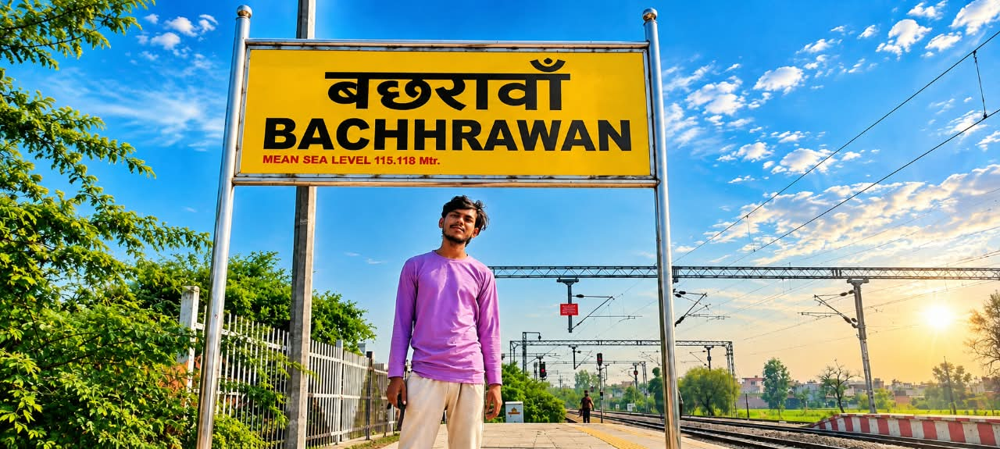

Code is my weapon,
success is my game
Hum sikhate hain: |
Centre Gallery
Photo par click karke bada dekhein
Our Courses
Beginner se advanced tak, har level ke liye course
🎉 OBC students ke liye admission open hai. Details ke liye centre par sampark karein.
Our Faculty
Theory aur practical dono me expert, anubhavi mentors
Manoj Sir
Director & Senior Mentor
Ajay Sir
Theory + Practical Expert
Ankita Ma'am
Expert Mentor
Vartika Ma'am
Expert Mentor
CCC Online Test Series
Apna chapter chunein aur test shuru karein
O-Level Online Test Series
Chapter-wise practice, exam jaisa experience
Daily Practice
Aaj ke important CCC aur O-Level questions
Typing Shooter Game(Anshika Verma)
Girte hue words ko type karke destroy karo aur speed badhao
Saturday Test & Leaderboard
25 questions ka mixed test. Login karke part lein aur Top 10 me jagah banayein.
| Rank | Student | Score |
|---|
Contact Karein
Admission aur course ki jankari ke liye
Address
✧ Behind Government Girls Inter College,
✧ Sanjay Nagar Colony,
✧ Bachhrawan, Raebareli
🕘 Timing: 8:00 AM - 5:00 PM
💻 MS Office Learning & Project Showcase
Learn MS Word, MS Excel, and MS PowerPoint with interactive questions, formulas, and real project examples!
🎯 Top 5 MS Word Questions & Answers
Q1. MS Word me Default Page Orientation kya hota hai?
Answer: Portrait orientation default hota hai.
Q1. What is Microsoft Word?
Answer: (B) A word processing software application developed by Microsoft
Q2. What is the default file extension for documents saved in modern MS Word (2007 and later)?
Answer: (B) .docx
Q3. What was the default file extension for MS Word documents prior to version 2007?
Answer: (B) .doc
Q4. What is the shortcut key to create a new blank document in MS Word?
Answer: (B) Ctrl + N
Q5. What is the shortcut key to open an existing document?
Answer: (B) Ctrl + O
Q6. What is the shortcut key to save a document?
Answer: (B) Ctrl + S
Q7. Which shortcut opens the 'Save As' dialog box in MS Word?
Answer: (B) F12
Q8. What bar located at the very top of the Word window displays the document name and application?
Answer: (B) Title Bar
Q9. What area contains tabs, groups, and commands organized across the top of the workspace?
Answer: (B) Ribbon
Q10. What bar located at the bottom of the Word window shows page number, word count, and zoom slider?
Answer: (B) Status Bar
Q11. Which view shows how the document will look when printed on paper?
Answer: (B) Print Layout View
Q12. Which view optimizes document reading by hiding toolbars and adjusting text flow?
Answer: (B) Read Mode
Q13. Which view displays the document as it would appear on a web browser?
Answer: (B) Web Layout View
Q14. Which view shows document structure using heading levels with collapsible outlines?
Answer: (B) Outline View
Q15. What feature allows users to quickly undo their last action?
Answer: (B) Undo (Ctrl + Z)
Q16. What feature reverses the effect of the Undo command?
Answer: (B) Redo (Ctrl + Y)
Q17. What shortcut key combination opens the Find and Replace dialog box?
Answer: (B) Ctrl + H
Q18. What shortcut key opens only the Find navigation pane?
Answer: (B) Ctrl + F
Q19. What shortcut key opens the Go To dialog box?
Answer: (B) Ctrl + G
Q20. What is the maximum zoom percentage available in MS Word?
Answer: (B) 500%
Q21. What is the minimum zoom percentage available in MS Word?
Answer: (B) 10%
Q22. What is the default zoom level in MS Word?
Answer: (B) 100%
Q23. Which key combination closes the active document window?
Answer: (B) Ctrl + W
Q24. Which key combination exits and closes the entire MS Word application?
Answer: (B) Alt + F4
Q25. What shortcut key opens the Help window in MS Word?
Answer: (B) F1
Q26. What is the shortcut key to make selected text Bold?
Answer: (B) Ctrl + B
Q27. What is the shortcut key to make selected text Italic?
Answer: (B) Ctrl + I
Q28. What is the shortcut key to Underline selected text?
Answer: (B) Ctrl + U
Q29. What is the shortcut key to center align a paragraph?
Answer: (B) Ctrl + E
Q30. What is the shortcut key for Left alignment?
Answer: (B) Ctrl + L
Q31. What is the shortcut key for Right alignment?
Answer: (B) Ctrl + R
Q32. What is the shortcut key for Justify alignment?
Answer: (B) Ctrl + J
Q33. What is the default font name in MS Word 2016/2019/365?
Answer: (B) Calibri
Q34. What was the default font name in MS Word 2003 and earlier?
Answer: (B) Times New Roman
Q35. What is the default font size (in points) in modern MS Word?
Answer: (B) 11 pt
Q36. What is the smallest and largest font size available in the Font Size dropdown list on the ribbon?
Answer: (B) 8 pt and 72 pt
Q37. What shortcut key increases font size of selected text by 1 pt?
Answer: (B) Ctrl + ]
Q38. What shortcut key decreases font size of selected text by 1 pt?
Answer: (B) Ctrl + [
Q39. What shortcut key opens the Font formatting dialog box directly?
Answer: (B) Ctrl + D or Ctrl + Shift + F
Q40. Which shortcut changes selected text to UPPERCASE, lowercase, or Title Case?
Answer: (B) Shift + F3
Q41. What shortcut key clears all text formatting and reverts to normal style?
Answer: (B) Ctrl + Spacebar
Q42. What is Format Painter used for?
Answer: (B) To copy formatting from one piece of text and apply it to another
Q43. What is the shortcut key to copy formatting using Format Painter?
Answer: (B) Ctrl + Shift + C
Q44. What is the shortcut key to paste formatting using Format Painter?
Answer: (B) Ctrl + Shift + V
Q45. What shortcut applies single line spacing (1.0) to a paragraph?
Answer: (B) Ctrl + 1
Q46. What shortcut applies double line spacing (2.0) to a paragraph?
Answer: (B) Ctrl + 2
Q47. What shortcut applies 1.5 line spacing to a paragraph?
Answer: (B) Ctrl + 5
Q48. What shortcut key inserts a page break manually?
Answer: (B) Ctrl + Enter
Q49. What shortcut key selects the entire document text?
Answer: (B) Ctrl + A
Q50. What shortcut key opens the Print dialog box?
Answer: (B) Ctrl + P
Q51. What feature allows arranging text in rows and columns?
Answer: (B) Table
Q52. What is the intersection of a row and column in a Word table called?
Answer: (B) Cell
Q53. What shortcut key moves to the next cell in a table?
Answer: (B) Tab
Q54. What shortcut key moves to the previous cell in a table?
Answer: (B) Shift + Tab
Q55. What shortcut key splits a table into two tables starting from the cursor row?
Answer: (B) Ctrl + Shift + Enter
Q56. What area at the top of every page in a document is called?
Answer: (B) Header
Q57. What area at the bottom of every page in a document is called?
Answer: (B) Footer
Q58. How do you quickly open the header or footer editing area?
Answer: (B) Double-click on the top or bottom margin area of the page
Q59. What faint background text or image displayed behind document text is called?
Answer: (B) Watermark
Q60. What feature adds a decorative border around document pages?
Answer: (B) Page Border
Q61. What are the standard default page margins in MS Word (in inches)?
Answer: (B) 1 inch on all sides (Top, Bottom, Left, Right)
Q62. What are the two primary page orientation options in Word?
Answer: (B) Portrait and Landscape
Q63. What tool checks spelling and grammar errors in a document?
Answer: (B) Spelling & Grammar check (F7)
Q64. What does a red wavy underline beneath a word indicate?
Answer: (B) Spelling mistake
Q65. What does a blue wavy underline beneath a word or phrase indicate?
Answer: (B) Grammatical or contextual error
Q66. What feature suggests alternative words with similar meanings (synonyms)?
Answer: (B) Thesaurus (Shift + F7)
Q67. What tool counts total words, characters, paragraphs, and lines in a document?
Answer: (B) Word Count
Q68. What feature inserts pre-formatted decorative text effects?
Answer: (B) WordArt
Q69. What feature inserts a small decorative graphic symbol like symbols or icons?
Answer: (B) Symbol / Insert Symbol
Q70. What feature allows capturing and inserting pictures of running desktop windows?
Answer: (B) Screenshot
Q71. What graphical tool illustrates hierarchical or relational information like flowcharts?
Answer: (B) SmartArt
Q72. What feature creates a visual graphical representation of numerical data?
Answer: (B) Chart
Q73. What object positioning option allows text to flow around an image tightly?
Answer: (B) Text Wrapping (Tight / Square)
Q74. What is a Drop Cap in MS Word?
Answer: (B) A large capital letter at the beginning of a paragraph dropping across multiple lines
Q75. What feature automatically formats typed fractions, ordinal suffixes, or bullet lists?
Answer: (B) AutoCorrect
Q76. What feature in MS Word is used to generate personalized bulk letters, emails, and labels?
Answer: (B) Mail Merge
Q77. What are the two core components required to execute a Mail Merge?
Answer: (B) Main Document and Data Source (Recipient List)
Q78. What file type is commonly used as a data source for Mail Merge?
Answer: (B) Excel spreadsheet (.xlsx) or CSV file
Q79. What are placeholders in a main document where data source fields are inserted called?
Answer: (B) Merge Fields
Q80. What feature records a sequence of mouse clicks and keystrokes to automate repetitive tasks?
Answer: (B) Macro
Q81. What programming language is used behind Word Macros?
Answer: (B) VBA (Visual Basic for Applications)
Q82. What is the file extension for macro-enabled Word documents?
Answer: (B) .docm
Q83. What shortcut key opens the VBA macro editor in Word?
Answer: (B) Alt + F11
Q84. What feature records and displays all edits, deletions, and formatting changes made by multiple reviewers?
Answer: (B) Track Changes
Q85. What shortcut key enables or disables Track Changes?
Answer: (B) Ctrl + Shift + E
Q86. What feature allows reviewers to add notes on the side margin without altering main text?
Answer: (B) Comments
Q87. What feature restricts editing permissions or applies password protection to a document?
Answer: (B) Protect Document / Restrict Editing
Q88. What feature generates a table of contents automatically based on heading styles?
Answer: (B) Table of Contents (References Tab)
Q89. What feature adds citations and generates bibliographies automatically?
Answer: (B) Citations & Bibliography
Q90. What is a Footnote?
Answer: (B) A note placed at the bottom of the current page providing reference or explanation
Q91. What is an Endnote?
Answer: (B) A note placed at the very end of the document or section
Q92. What shortcut key inserts a Footnote?
Answer: (B) Alt + Ctrl + F
Q93. What shortcut key inserts an Endnote?
Answer: (B) Alt + Ctrl + D
Q94. What feature creates a linked index of key terms at the end of a book or document?
Answer: (B) Index
Q95. What shortcut key opens the Go To tab in Find and Replace?
Answer: (B) Ctrl + G or F5
Q96. What shortcut key applies Strikethrough formatting to selected text?
Answer: (B) Ctrl + D (then select strikethrough) or ribbon button
Q97. What shortcut key subscripts selected text (e.g., H₂O)?
Answer: (B) Ctrl + =
Q98. What shortcut key superscripts selected text (e.g., X²)?
Answer: (B) Ctrl + Shift + +
Q99. What shortcut key repeats the last formatting or editing action performed?
Answer: (B) F4 or Ctrl + Y
Q100. What is the master template file extension used for storing custom Word styles and templates?
Answer: (B) .dotx
Q2. Mail Merge feature ka upyog kyu kiya jata hai?
Answer: Ek hi letter ya document ko ek sath multiple recipients ko send karne ke liye.
Q3. MS Word me Find aur Replace ki shortcut key kya hai?
Answer: Find ke liye Ctrl + F aur Replace ke liye Ctrl + H hoti hai.
Q4. Header aur Footer kya hai aur inka upyog kahan hota hai?
Answer: Document ke har page ke top (Header) aur bottom (Footer) par page number, date ya title repeat karne ke liye use hota hai.
Q5. Line Spacing change karne ki shortcut keys kya hain?
Answer: Single space: Ctrl + 1, Double space: Ctrl + 2, 1.5 line space: Ctrl + 5.
📂 MS Word Project Work Showcase

🎓 Professional Course Certificate
Border design, stylish fonts aur logo placement ke sath banaya gaya certificate layout.

🍔 Restaurant Menu Card
Table formatting, column layout aur images ka use karke banaya gaya multi-page menu.

🧾 Professional Invoice Bill
Company bill format jisme headers, totals, terms & conditions neat layout me setup hai.
🎯 Top 5 MS Excel Questions & Answers
Q1. Excel me Worksheet aur Workbook me kya antar hai?
Answer: Single sheet ko Worksheet kehte hain, aur multiple worksheets ke collection ko Workbook kehte hain.
Q1. What is Microsoft Word?
Answer: (B) A word processing software application developed by Microsoft
Q2. What is the default file extension for documents saved in modern MS Word (2007 and later)?
Answer: (B) .docx
Q3. What was the default file extension for MS Word documents prior to version 2007?
Answer: (B) .doc
Q4. What is the shortcut key to create a new blank document in MS Word?
Answer: (B) Ctrl + N
Q5. What is the shortcut key to open an existing document?
Answer: (B) Ctrl + O
Q6. What is the shortcut key to save a document?
Answer: (B) Ctrl + S
Q7. Which shortcut opens the 'Save As' dialog box in MS Word?
Answer: (B) F12
Q8. What bar located at the very top of the Word window displays the document name and application?
Answer: (B) Title Bar
Q9. What area contains tabs, groups, and commands organized across the top of the workspace?
Answer: (B) Ribbon
Q10. What bar located at the bottom of the Word window shows page number, word count, and zoom slider?
Answer: (B) Status Bar
Q11. Which view shows how the document will look when printed on paper?
Answer: (B) Print Layout View
Q12. Which view optimizes document reading by hiding toolbars and adjusting text flow?
Answer: (B) Read Mode
Q13. Which view displays the document as it would appear on a web browser?
Answer: (B) Web Layout View
Q14. Which view shows document structure using heading levels with collapsible outlines?
Answer: (B) Outline View
Q15. What feature allows users to quickly undo their last action?
Answer: (B) Undo (Ctrl + Z)
Q16. What feature reverses the effect of the Undo command?
Answer: (B) Redo (Ctrl + Y)
Q17. What shortcut key combination opens the Find and Replace dialog box?
Answer: (B) Ctrl + H
Q18. What shortcut key opens only the Find navigation pane?
Answer: (B) Ctrl + F
Q19. What shortcut key opens the Go To dialog box?
Answer: (B) Ctrl + G
Q20. What is the maximum zoom percentage available in MS Word?
Answer: (B) 500%
Q21. What is the minimum zoom percentage available in MS Word?
Answer: (B) 10%
Q22. What is the default zoom level in MS Word?
Answer: (B) 100%
Q23. Which key combination closes the active document window?
Answer: (B) Ctrl + W
Q24. Which key combination exits and closes the entire MS Word application?
Answer: (B) Alt + F4
Q25. What shortcut key opens the Help window in MS Word?
Answer: (B) F1
Q26. What is the shortcut key to make selected text Bold?
Answer: (B) Ctrl + B
Q27. What is the shortcut key to make selected text Italic?
Answer: (B) Ctrl + I
Q28. What is the shortcut key to Underline selected text?
Answer: (B) Ctrl + U
Q29. What is the shortcut key to center align a paragraph?
Answer: (B) Ctrl + E
Q30. What is the shortcut key for Left alignment?
Answer: (B) Ctrl + L
Q31. What is the shortcut key for Right alignment?
Answer: (B) Ctrl + R
Q32. What is the shortcut key for Justify alignment?
Answer: (B) Ctrl + J
Q33. What is the default font name in MS Word 2016/2019/365?
Answer: (B) Calibri
Q34. What was the default font name in MS Word 2003 and earlier?
Answer: (B) Times New Roman
Q35. What is the default font size (in points) in modern MS Word?
Answer: (B) 11 pt
Q36. What is the smallest and largest font size available in the Font Size dropdown list on the ribbon?
Answer: (B) 8 pt and 72 pt
Q37. What shortcut key increases font size of selected text by 1 pt?
Answer: (B) Ctrl + ]
Q38. What shortcut key decreases font size of selected text by 1 pt?
Answer: (B) Ctrl + [
Q39. What shortcut key opens the Font formatting dialog box directly?
Answer: (B) Ctrl + D or Ctrl + Shift + F
Q40. Which shortcut changes selected text to UPPERCASE, lowercase, or Title Case?
Answer: (B) Shift + F3
Q41. What shortcut key clears all text formatting and reverts to normal style?
Answer: (B) Ctrl + Spacebar
Q42. What is Format Painter used for?
Answer: (B) To copy formatting from one piece of text and apply it to another
Q43. What is the shortcut key to copy formatting using Format Painter?
Answer: (B) Ctrl + Shift + C
Q44. What is the shortcut key to paste formatting using Format Painter?
Answer: (B) Ctrl + Shift + V
Q45. What shortcut applies single line spacing (1.0) to a paragraph?
Answer: (B) Ctrl + 1
Q46. What shortcut applies double line spacing (2.0) to a paragraph?
Answer: (B) Ctrl + 2
Q47. What shortcut applies 1.5 line spacing to a paragraph?
Answer: (B) Ctrl + 5
Q48. What shortcut key inserts a page break manually?
Answer: (B) Ctrl + Enter
Q49. What shortcut key selects the entire document text?
Answer: (B) Ctrl + A
Q50. What shortcut key opens the Print dialog box?
Answer: (B) Ctrl + P
Q51. What feature allows arranging text in rows and columns?
Answer: (B) Table
Q52. What is the intersection of a row and column in a Word table called?
Answer: (B) Cell
Q53. What shortcut key moves to the next cell in a table?
Answer: (B) Tab
Q54. What shortcut key moves to the previous cell in a table?
Answer: (B) Shift + Tab
Q55. What shortcut key splits a table into two tables starting from the cursor row?
Answer: (B) Ctrl + Shift + Enter
Q56. What area at the top of every page in a document is called?
Answer: (B) Header
Q57. What area at the bottom of every page in a document is called?
Answer: (B) Footer
Q58. How do you quickly open the header or footer editing area?
Answer: (B) Double-click on the top or bottom margin area of the page
Q59. What faint background text or image displayed behind document text is called?
Answer: (B) Watermark
Q60. What feature adds a decorative border around document pages?
Answer: (B) Page Border
Q61. What are the standard default page margins in MS Word (in inches)?
Answer: (B) 1 inch on all sides (Top, Bottom, Left, Right)
Q62. What are the two primary page orientation options in Word?
Answer: (B) Portrait and Landscape
Q63. What tool checks spelling and grammar errors in a document?
Answer: (B) Spelling & Grammar check (F7)
Q64. What does a red wavy underline beneath a word indicate?
Answer: (B) Spelling mistake
Q65. What does a blue wavy underline beneath a word or phrase indicate?
Answer: (B) Grammatical or contextual error
Q66. What feature suggests alternative words with similar meanings (synonyms)?
Answer: (B) Thesaurus (Shift + F7)
Q67. What tool counts total words, characters, paragraphs, and lines in a document?
Answer: (B) Word Count
Q68. What feature inserts pre-formatted decorative text effects?
Answer: (B) WordArt
Q69. What feature inserts a small decorative graphic symbol like symbols or icons?
Answer: (B) Symbol / Insert Symbol
Q70. What feature allows capturing and inserting pictures of running desktop windows?
Answer: (B) Screenshot
Q71. What graphical tool illustrates hierarchical or relational information like flowcharts?
Answer: (B) SmartArt
Q72. What feature creates a visual graphical representation of numerical data?
Answer: (B) Chart
Q73. What object positioning option allows text to flow around an image tightly?
Answer: (B) Text Wrapping (Tight / Square)
Q74. What is a Drop Cap in MS Word?
Answer: (B) A large capital letter at the beginning of a paragraph dropping across multiple lines
Q75. What feature automatically formats typed fractions, ordinal suffixes, or bullet lists?
Answer: (B) AutoCorrect
Q76. What feature in MS Word is used to generate personalized bulk letters, emails, and labels?
Answer: (B) Mail Merge
Q77. What are the two core components required to execute a Mail Merge?
Answer: (B) Main Document and Data Source (Recipient List)
Q78. What file type is commonly used as a data source for Mail Merge?
Answer: (B) Excel spreadsheet (.xlsx) or CSV file
Q79. What are placeholders in a main document where data source fields are inserted called?
Answer: (B) Merge Fields
Q80. What feature records a sequence of mouse clicks and keystrokes to automate repetitive tasks?
Answer: (B) Macro
Q81. What programming language is used behind Word Macros?
Answer: (B) VBA (Visual Basic for Applications)
Q82. What is the file extension for macro-enabled Word documents?
Answer: (B) .docm
Q83. What shortcut key opens the VBA macro editor in Word?
Answer: (B) Alt + F11
Q84. What feature records and displays all edits, deletions, and formatting changes made by multiple reviewers?
Answer: (B) Track Changes
Q85. What shortcut key enables or disables Track Changes?
Answer: (B) Ctrl + Shift + E
Q86. What feature allows reviewers to add notes on the side margin without altering main text?
Answer: (B) Comments
Q87. What feature restricts editing permissions or applies password protection to a document?
Answer: (B) Protect Document / Restrict Editing
Q88. What feature generates a table of contents automatically based on heading styles?
Answer: (B) Table of Contents (References Tab)
Q89. What feature adds citations and generates bibliographies automatically?
Answer: (B) Citations & Bibliography
Q90. What is a Footnote?
Answer: (B) A note placed at the bottom of the current page providing reference or explanation
Q91. What is an Endnote?
Answer: (B) A note placed at the very end of the document or section
Q92. What shortcut key inserts a Footnote?
Answer: (B) Alt + Ctrl + F
Q93. What shortcut key inserts an Endnote?
Answer: (B) Alt + Ctrl + D
Q94. What feature creates a linked index of key terms at the end of a book or document?
Answer: (B) Index
Q95. What shortcut key opens the Go To tab in Find and Replace?
Answer: (B) Ctrl + G or F5
Q96. What shortcut key applies Strikethrough formatting to selected text?
Answer: (B) Ctrl + D (then select strikethrough) or ribbon button
Q97. What shortcut key subscripts selected text (e.g., H₂O)?
Answer: (B) Ctrl + =
Q98. What shortcut key superscripts selected text (e.g., X²)?
Answer: (B) Ctrl + Shift + +
Q99. What shortcut key repeats the last formatting or editing action performed?
Answer: (B) F4 or Ctrl + Y
Q100. What is the master template file extension used for storing custom Word styles and templates?
Answer: (B) .dotx
Q2. Formula humesha kis sign se start hota hai?
Answer: Excel me koi bhi formula humesha Equal Sign (=) se start hota hai.
Q3. VLOOKUP ka full form aur upyog kya hai?
Answer: Vertical Lookup. Yeh data table me se specific value verticals lookup karne ke liye use hota hai.
Q4. Absolute Cell Reference ke liye kis symbol ka use hota hai?
Answer: Dollar Sign ($) ka (jaise: $A$1).
Q5. Excel sheet me total kitne rows aur columns hote hain?
Answer: Total Rows: 1,048,576 aur Total Columns: 16,384 (XFD) hote hain.
⚡ Top 5 Essential Excel Formulas & Examples
1. SUM Formula
Yeh kya kaam karta hai: Chuni hui range ki sabhi numerical values ko add karne ke liye.

2. AVERAGE Formula
Yeh kya kaam karta hai: Selected values ka mean ya average nikalne ke liye.

3. IF Formula
Yeh kya kaam karta hai: Logical conditions check karne ke liye (Pass/Fail).

4. VLOOKUP Formula
Yeh kya kaam karta hai: Data table me vertical data search karne ke liye.

5. COUNTIF Formula
Yeh kya kaam karta hai: Condition ke mutabiq cells ko count karne ke liye.

🎯 Top 4 MS PowerPoint MCQ Questions
Q1. PowerPoint Presentation me Nayi Slide Insert karne ki Shortcut Key kya hai?
Answer: Ctrl + M
Q1. What is Microsoft PowerPoint?
Answer: (B) A presentation program developed by Microsoft
Q2. What is the default file extension for presentations saved in modern MS PowerPoint (2007 and later)?
Answer: (B) .pptx
Q3. What was the default file extension for PowerPoint presentations prior to version 2007?
Answer: (B) .ppt
Q4. What is the file extension for a PowerPoint Show that opens directly in slide show mode?
Answer: (B) .ppsx
Q5. What is the file extension for a PowerPoint Template?
Answer: (B) .potx
Q6. What is the shortcut key to create a new blank presentation?
Answer: (B) Ctrl + N
Q7. What is the shortcut key to open an existing presentation?
Answer: (B) Ctrl + O
Q8. What is the shortcut key to save a presentation?
Answer: (B) Ctrl + S
Q9. What is the shortcut key to insert a new slide into a presentation?
Answer: (B) Ctrl + M
Q10. What is the shortcut key to duplicate the selected slide?و
Answer: (B) Ctrl + D
Q11. Which view displays miniature images of all slides in the presentation for easy rearranging?
Answer: (B) Slide Sorter View
Q12. Which view shows slides in full screen for delivering the presentation to an audience?
Answer: (B) Slide Show View
Q13. Which view shows normal editing pane with slide thumbnail pane on the left?
Answer: (B) Normal View
Q14. Which view allows speakers to view their presentation notes alongside slide preview and timer?
Answer: (B) Presenter View
Q15. Which view shows text outline of all slides structured by headings and bullet points?
Answer: (B) Outline View
Q16. What shortcut key starts the slide show from the very first slide (Slide 1)?
Answer: (B) F5
Q17. What shortcut key starts the slide show from the currently selected current slide?
Answer: (B) Shift + F5
Q18. What shortcut key ends or exits a running slide show?
Answer: (B) Esc
Q19. What is the default slide orientation in PowerPoint?
Answer: (B) Landscape
Q20. What is the default slide size ratio in modern PowerPoint versions (2013 and later)?
Answer: (B) 16:9 widescreen
Q21. What was the default slide size ratio in older PowerPoint versions (2010 and earlier)?
Answer: (B) 4:3 standard
Q22. What shortcut key opens the Find dialog box?
Answer: (B) Ctrl + F
Q23. What shortcut key opens the Replace dialog box?
Answer: (B) Ctrl + H
Q24. What key combination closes the active presentation window?
Answer: (B) Ctrl + W
Q25. What key combination exits and closes the entire PowerPoint application?
Answer: (B) Alt + F4
Q26. What is a Slide Master used for?
Answer: (B) To control global design, background, and formatting across all slides in a presentation
Q27. How do you open the Slide Master view?
Answer: (B) View Tab -> Slide Master
Q28. What is a Slide Layout?
Answer: (B) Pre-arranged arrangement of placeholders for text, titles, pictures, and charts on a slide
Q29. What is a Placeholder in PowerPoint?
Answer: (B) Dotted-border container boxes on slides that hold text, graphics, or multimedia
Q30. What shortcut key makes selected text Bold?
Answer: (B) Ctrl + B
Q31. What shortcut key makes selected text Italic?
Answer: (B) Ctrl + I
Q32. What shortcut key underlines selected text?
Answer: (B) Ctrl + U
Q33. What shortcut key centers a paragraph or text box?و
Answer: (B) Ctrl + E
Q34. What shortcut key left-aligns text?
Answer: (B) Ctrl + L
Q35. What shortcut key right-aligns text?
Answer: (B) Ctrl + R
Q36. What shortcut key justifies text?
Answer: (B) Ctrl + J
Q37. What shortcut key opens the Font formatting dialog box?
Answer: (B) Ctrl + T or Ctrl + Shift + F
Q38. What shortcut key increases font size by 1 pt?
Answer: (B) Ctrl + ]
Q39. What shortcut key decreases font size by 1 pt?
Answer: (B) Ctrl + [
Q40. What shortcut key groups multiple selected shapes or objects together?
Answer: (B) Ctrl + G
Q41. What shortcut key ungroups grouped shapes or objects?
Answer: (B) Ctrl + Shift + G
Q42. What shortcut key regroups previously grouped objects?
Answer: (B) Ctrl + J (or Ctrl + Shift + J)
Q43. What feature copies formatting from one shape or text and applies it to another?
Answer: (B) Format Painter
Q44. What shortcut key duplicates any selected object instantly?
Answer: (B) Ctrl + D
Q45. What shortcut key deletes the selected slide or object?
Answer: (B) Delete or Backspace
Q46. What feature changes overall color scheme and font combinations of a presentation instantly?
Answer: (B) Themes / Variants
Q47. What feature adds pre-designed professional backgrounds to slides?
Answer: (B) Design Ideas / Background Styles
Q48. What tool checks spelling errors across the presentation?
Answer: (B) Spelling Check (F7)
Q49. What shortcut key selects all objects or text on a slide?
Answer: (B) Ctrl + A
Q50. What shortcut key opens the Print dialog box?
Answer: (B) Ctrl + P
Q51. What is the difference between Slide Transition and Slide Animation?
Answer: (B) Transition is visual effect when moving between slides; Animation is visual effect applied to individual objects on a slide
Q52. Under which ribbon tab are Slide Transitions located?
Answer: (B) Transitions Tab
Q53. Under which ribbon tab are object animations located?
Answer: (B) Animations Tab
Q54. What are the four main categories of object animations in PowerPoint?
Answer: (B) Entrance, Emphasis, Exit, and Motion Paths
Q55. What tool copies animation effects from one object and applies them to another?
Answer: (B) Animation Painter
Q56. What pane displays all applied animations on a slide in chronological order?
Answer: (B) Animation Pane
Q57. How do you insert an image from your computer into a slide?و
Answer: (B) Insert Tab -> Pictures
Q58. What feature records narrated audio and slide timings for self-running presentations?
Answer: (B) Record Slide Show
Q59. How do you insert background background music across multiple slides?
Answer: (B) Insert Audio -> Play in Background option
Q60. What tool illustrates hierarchical, process, or relationship diagrams graphically?
Answer: (B) SmartArt
Q61. What graphical tool displays numerical data visually in bars, pies, or lines?
Answer: (B) Chart
Q62. What feature inserts a rectangular interactive data table onto a slide?
Answer: (B) Table
Q63. What feature creates decorative text with shadows, gradients, and 3D effects?
Answer: (B) WordArt
Q64. What tool captures and inserts images of running desktop application windows?
Answer: (B) Screenshot
Q65. What is the purpose of adding speaker notes to a slide?و
Answer: (B) To provide detailed talking points and reminders visible only to the speaker in Presenter View
Q66. Which key combination turns the presentation screen completely Black during a slide show?
Answer: (B) B key (or Period . key)
Q67. Which key combination turns the presentation screen completely White during a slide show?
Answer: (B) W key (or Comma , key)
Q68. What shortcut key during a slide show jumps directly to slide number N?
Answer: (B) Type slide number N and press Enter
Q69. What shortcut key brings up the All Slides navigator popup during a slide show?
Answer: (B) Ctrl + S (or clicking slide list icon)
Q70. What tool converts mouse pointer into a laser pointer during a slide show?
Answer: (B) Ctrl + Left Click and hold mouse
Q71. What tool converts mouse pointer into a pen for drawing on slides during a show?و
Answer: (B) Ctrl + P
Q72. What shortcut key erases all ink annotations drawn on slides during a show?
Answer: (B) E key
Q73. What is the purpose of hiding a slide in PowerPoint?
Answer: (B) To keep the slide in the file but prevent it from showing during slide show playback
Q74. How do you hide a selected slide?
Answer: (B) Slide Show Tab -> Hide Slide
Q75. What feature allows setting up customized subsets of slides from a main presentation?
Answer: (B) Custom Slide Show
Q76. What feature allows jumping to another slide, website, or file by clicking text or shapes?
Answer: (B) Hyperlink (Ctrl + K)
Q77. What is an Action Button in PowerPoint?
Answer: (B) Ready-made interactive buttons inserted to perform navigation actions like home, next, back, or sound
Q78. Under which tab are Action Buttons found?
Answer: (B) Insert Tab -> Shapes -> Action Buttons
Q79. How do you set a presentation to loop continuously until Esc is pressed?و
Answer: (B) Slide Show Tab -> Set Up Slide Show -> Browsed at a kiosk (full screen) or Loop continuously
Q80. What feature compresses all pictures in a presentation to reduce file size?
Answer: (B) Compress Pictures (Picture Format Tab)
Q81. What feature allows packaging a presentation along with linked fonts and media onto a CD or folder?
Answer: (B) Package Presentation for CD / Folder
Q82. In what formats can a PowerPoint presentation be exported?
Answer: (B) PDF, Video (.mp4 / .wmv), Images (.jpg / .png), GIF, and Outline (.docx)
Q83. What shortcut key opens the Save As dialog box to change formats?
Answer: (B) F12
Q84. What feature records a voiceover narration synced with slide timings?
Answer: (B) Record Slide Show
Q85. What shortcut key opens the VBA Macro editor in PowerPoint?
Answer: (B) Alt + F11
Q86. What is the file extension for macro-enabled PowerPoint presentations?
Answer: (B) .pptm
Q87. What feature checks accessibility issues for disabled users before sharing?
Answer: (B) Check Accessibility (Review Tab)
Q88. What feature inspects presentation for hidden metadata and private comments before publishing?
Answer: (B) Inspect Document
Q89. What password protection options are available for PowerPoint files?
Answer: (B) Encrypt with Password for opening and modifying
Q90. What is the purpose of setting slide transition duration?
Answer: (B) To control how fast or slow the transition animation effect plays
Q91. What is the purpose of setting "Advance Slide: After [HH:MM:SS]" in transitions?و
Answer: (B) To make slides advance automatically after a specified time delay without manual clicks
Q92. What feature aligns multiple selected objects evenly across a slide?
Answer: (B) Align and Distribute (Shape Format Tab)
Q93. What feature controls overlapping order of shapes (bringing to front or sending to back)?
Answer: (B) Bring Forward / Send Backward
Q94. What shortcut key duplicates the last action or moves object step-by-step?
Answer: (B) F4 or Ctrl + Y
Q95. What shortcut key opens the Selection Pane to manage overlapping slide objects?
Answer: (B) Selection Pane (Shape Format Tab)
Q96. Can you merge intersecting shapes using Merge Shapes tool?
Answer: (A) Yes (Union, Combine, Fragment, Intersect, Subtract)
Q97. What is the master template file extension used for saving PowerPoint custom templates?
Answer: (B) .potx
Q98. What shortcut key opens the Help pane in PowerPoint?
Answer: (B) F1
Q99. What shortcut key opens the spelling and grammar check dialog?
Answer: (B) F7
Q100. What shortcut key opens the Thesaurus pane for synonyms?
Answer: (B) Shift + F7
Q2. Slide Show ko pehli slide se start karne ki Function Key konsi hai?
Answer: F5
Q3. Slide Transition aur Custom Animation me kya antar hai?
Answer: Slide Transition poori slide par lagta hai, aur Animation items par.
Q4. Slide Master View ka upyog kisliye hota hai?
Answer: Sabhi slides ke overall layout aur styling ko manage karne ke liye.
🎭 PowerPoint Presentation Showcase

📊 Business Pitch Presentation
Infographics, animated charts aur professional dark theme slides.

🎓 Educational Seminar Slide
Clean typography aur topic icons ke sath interactive slideshow.
🐍 Python Programming - 12 Chapters Test & Practice
Select a chapter below to practice 5 important questions and answers for each chapter!
📖 Chapter 1: Introduction to Programming - Q&A
Q1. Who created the Python programming language?
Answer: (B) Guido van Rossum
Q2. In which year was Python first released?
Answer: (B) 1991
Q3. Which of the following is correct extension of Python file?
Answer: (C) .py
Q4. Python is which type of language?
Answer: (B) Interpreted
Q5. Which character is used for single-line comments in Python?
Answer: (C) #
Q6. Which function is used to display output on screen?
Answer: (B) print()
Q7. How do you create a variable with numeric value 5 in Python?
Answer: (B) x = 5
Q8. Which of the following is NOT a valid Python variable name?
Answer: (C) 2myvar
Q9. What is the output of type(3.14)?
Answer: (B) <class 'float'>
Q10. Which operator is used for exponentiation (power)?
Answer: (B) **
Q11. What is the result of 10 // 3 in Python?
Answer: (B) 3
Q12. Which operator returns the remainder of a division?
Answer: (A) %
Q13. Is Python case-sensitive when dealing with identifiers?
Answer: (A) Yes
Q14. Which function takes user input from console as string?
Answer: (C) input()
Q15. What will print("Hello" + "World") output?
Answer: (B) HelloWorld
Q16. Which data type is immutable in Python?
Answer: (C) Tuple
Q17. How do you define a multiline string in Python?
Answer: (A) Triple quotes
Q18. What is the output of bool(0)?
Answer: (B) False
Q19. Which keyword is used to define a function?
Answer: (B) def
Q20. What is the correct syntax for an if statement?
Answer: (C) if x > 5:
Q21. What does PEP stand for in Python ecosystem?
Answer: (B) Python Enhancement Proposal
Q22. Which style guide is recommended for Python code?
Answer: (A) PEP 8
Q23. What is the result of 2 * 3 ** 2?
Answer: (B) 18
Q24. Which built-in function returns length of an object?
Answer: (B) len()
Q25. What data type is [1, 2, 3]?
Answer: (B) List
Q26. What data type is (1, 2, 3)?
Answer: (B) Tuple
Q27. How do you create a set in Python?
Answer: (A) {1, 2, 3}
Q28. What is the default return type of input()?
Answer: (C) str
Q29. Which of these is a mutable data structure?
Answer: (C) List
Q30. What is output of int(3.8)?
Answer: (B) 3
Q31. What is the value of "Python"[0]?
Answer: (A) P
Q32. What is index of last element in a 5-item list?
Answer: (B) 4 or -1
Q33. What does "abc" * 3 produce?
Answer: (B) abcabcabc
Q34. Which operator checks if two values are equal?
Answer: (B) ==
Q35. What is the result of 5 != 5?
Answer: (B) False
Q36. Logical and returns True when?
Answer: (B) Both operands True
Q37. Which keyword is used for standard logical NOT?
Answer: (B) not
Q38. What is the value of not (True and False)?
Answer: (B) True
Q39. Which operator evaluates memory identity of objects?
Answer: (B) is
Q40. Which operator tests membership in a sequence?
Answer: (B) in
Q41. What is the output of "a" in "apple"?
Answer: (A) True
Q42. How do you convert an integer 10 to a float?
Answer: (B) float(10)
Q43. What is output of str(100)?
Answer: (B) '100'
Q44. Which symbol is used for Bitwise AND in Python?
Answer: (B) &
Q45. Bitwise OR is represented by which symbol?
Answer: (B) |
Q46. What is the output of 5 & 3?
Answer: (B) 1
Q47. What is output of 5 | 3?
Answer: (A) 7
Q48. Which keyword is used to import a module in Python?
Answer: (B) import
Q49. What is output of math.sqrt(16) (if math imported)?
Answer: (B) 4.0
Q50. Which function lists all attributes and methods of object?
Answer: (B) dir()
Q51. What is used to define blocks of code in Python?
Answer: (C) Indentation
Q52. How many spaces per indentation level does PEP 8 recommend?
Answer: (B) 4
Q53. What keyword is used for "else if" condition in Python?
Answer: (C) elif
Q54. What is output of range(5) converted to list?
Answer: (B) [0, 1, 2, 3, 4]
Q55. What is step size in range(1, 10, 2)?
Answer: (B) 2
Q56. Which statement exits loop prematurely?
Answer: (C) break
Q57. Which statement skips current iteration of loop?
Answer: (C) continue
Q58. What does pass statement do in Python?
Answer: (B) Does nothing (placeholder)
Q59. Can a while loop have an else block in Python?
Answer: (A) Yes
Q60. What is the output of bool("")?
Answer: (B) False
Q61. What is the output of bool([0])?
Answer: (B) True
Q62. Which escape character represents a new line?
Answer: (B) \n
Q63. Which escape character represents a horizontal tab?
Answer: (B) \t
Q64. What is raw string literal prefix in Python?
Answer: (B) r
Q65. What prefix is used for formatted string literals (f-strings)?
Answer: (B) f
Q66. What is result of f"{2+3}"?
Answer: (B) 5
Q67. What is output of print("a", "b", sep="-")?
Answer: (B) a-b
Q68. What is default value of end parameter in print()?
Answer: (B) newline "\n"
Q69. Which data type key mapping container is built-in?
Answer: (B) Dictionary
Q70. How do you create an empty dictionary?
Answer: (B) {}
Q71. What does None represent in Python?
Answer: (B) Absence of value / null
Q72. What is type of None?
Answer: (B) <class 'NoneType'>
Q73. Which operator is used for assignment?
Answer: (B) =
Q74. What is the name of := operator in Python 3.8+?
Answer: (B) Walrus Operator
Q75. What is the result of 3 + 2 * 2?
Answer: (B) 7
Q76. Python code is compiled into which intermediate form?
Answer: (B) Bytecode
Q77. What is standard reference implementation of Python?
Answer: (B) CPython
Q78. What is the extension of Python bytecode files?
Answer: (A) .pyc
Q79. Which function returns unique identifier/memory address of an object?
Answer: (B) id()
Q80. What error occurs when dividing a number by zero?
Answer: (B) ZeroDivisionError
Q81. What error is raised when variable is accessed before assignment?
Answer: (A) NameError
Q82. What error occurs when applying operation to inappropriate type?
Answer: (B) TypeError
Q83. How do you convert a string "123" to an integer?
Answer: (A) int("123")
Q84. What is the output of abs(-7.5)?
Answer: (B) 7.5
Q85. What does round(3.576, 2) return?
Answer: (B) 3.58
Q86. Which function returns quotient and remainder as tuple?
Answer: (B) divmod()
Q87. What is output of divmod(10, 3)?
Answer: (B) (3, 1)
Q88. Which function calculates maximum value in a list?
Answer: (B) max()
Q89. Which function calculates minimum value in a list?
Answer: (B) min()
Q90. What is output of sum([1, 2, 3, 4])?
Answer: (B) 10
Q91. Which keyword is used to return a value from function?
Answer: (B) return
Q92. What keyword is used to define global variable inside function?
Answer: (B) global
Q93. What is output of type(True)?
Answer: (B) <class 'bool'>
Q94. What is value of True + True in Python?
Answer: (B) 2
Q95. Is eval() used to evaluate Python expressions from string?
Answer: (B) Yes
Q96. What is output of bool("False")?
Answer: (B) True
Q97. What keyword is used to handle exceptions?
Answer: (B) except
Q98. Which keyword starts an exception handling block?
Answer: (B) try
Q99. Which block ALWAYS executes in exception handling?
Answer: (B) finally
Q100. What module provides access to command-line parameters?
Answer: (B) sys
📖 Chapter 2: Problem Solving Through Flowchart - Q&A
Q1. What is an algorithm?
Answer: (B) A step-by-step procedure to solve a specific problem.
Q2. What is a flowchart?
Answer: (C) A graphical representation of an algorithm using standard geometric symbols.
Q3. Which geometric shape is used to represent the Start and Stop in a flowchart?
Answer: (A) Oval (Terminal symbol)
Q4. Which symbol is used for Input and Output operations in a flowchart?
Answer: (B) Parallelogram
Q5. Which shape is used for processing or data manipulation in a flowchart?
Answer: (D) Rectangle
Q6. Which symbol represents a decision or branching point in a flowchart?
Answer: (C) Diamond (Rhombus)
Q7. What is used to connect different symbols and show the sequence of execution?
Answer: (A) Flowlines (Arrows)
Q8. What symbol is used to connect different parts of a complex flowchart on the same page?
Answer: (B) Circle (Connector)
Q9. What is pseudo-code?
Answer: (C) An informal high-level description of an algorithm written in plain human language.
Q10. Which of the following is NOT a characteristic of a good algorithm?
Answer: (D) Infinite execution time
Q11. What does the term "Finiteness" mean in an algorithm?
Answer: (A) The algorithm must terminate after a finite number of steps.
Q12. What does "Definiteness" mean in an algorithm?
Answer: (B) Each step of the algorithm must be clear, unambiguous, and precise.
Q13. What is the main advantage of using a flowchart before writing code?
Answer: (C) It helps visualize the logic and identify errors easily.
Q14. How many flowlines can exit from a processing (rectangle) box?
Answer: (A) Exactly 1
Q15. How many flowlines typically exit from a decision (diamond) box?
Answer: (B) 2 (True/False or Yes/No)
Q16. What symbol is used for off-page connector in a flowchart?
Answer: (C) Home-shaped pentagon
Q17. Which approach breaks a large problem into smaller sub-problems?
Answer: (B) Top-down design approach
Q18. What is a loop in a flowchart?
Answer: (D) A sequence of instructions executed repeatedly until a condition is met.
Q19. What is an infinite loop?
Answer: (A) A loop whose termination condition is never satisfied.
Q20. Which of the following is a fundamental control structure in programming?
Answer: (B) Sequence, Selection, and Iteration
Q21. What is dry running an algorithm?
Answer: (C) Manually tracing the code logic on paper with sample inputs.
Q22. What is a trace table used for?
Answer: (A) To track variable values step-by-step during manual execution.
Q23. Which symbol is used to represent predefined process or sub-routine call?
Answer: (D) Rectangle with double vertical bars on sides
Q24. What is the first step in solving any computational problem?
Answer: (A) Understanding and defining the problem requirements.
Q25. What is the last step in the program design cycle?
Answer: (C) Testing, debugging, and documentation
Q26. What is syntax error in problem solving?
Answer: (B) Violation of the grammar rules of the programming language.
Q27. What is logical error?
Answer: (C) Error in the algorithm logic that produces incorrect output without crashing.
Q28. What is runtime error?
Answer: (A) Error occurring during program execution, such as division by zero.
Q29. What is debugging?
Answer: (D) The process of finding and correcting bugs or errors in software.
Q30. What is modular programming?
Answer: (B) Dividing a program into independent, manageable sub-modules.
Q31. Which of the following is an example of an iteration control structure?
Answer: (C) While loop
Q32. Which structure executes statements in linear order one after another?
Answer: (A) Sequence structure
Q33. Which structure executes different paths based on a boolean condition?
Answer: (B) Selection (Decision) structure
Q34. What is the standard flow direction of a flowchart?
Answer: (D) Top to bottom and left to right
Q35. Can flowlines cross each other in a clean flowchart?
Answer: (B) No, crossing should be avoided using connectors.
Q36. What is a decision table?
Answer: (C) A tabular representation for managing complex logical conditions and actions.
Q37. What are the four main parts of a Decision Table?
Answer: (A) Condition Stub, Condition Entry, Action Stub, Action Entry
Q38. What is the advantage of pseudo-code over a flowchart?
Answer: (B) Easier to edit and closer to actual programming syntax.
Q39. What is the advantage of a flowchart over pseudo-code?
Answer: (C) Visual clarity makes complex branching easier to understand.
Q40. Which of the following is NOT a standard programming construct?
Answer: (D) Random jump without condition
Q41. What is an algorithm's efficiency evaluated by?
Answer: (B) Time Complexity and Space Complexity
Q42. What does Time Complexity measure?
Answer: (A) Amount of time taken by an algorithm to run as a function of input size.
Q43. What does Space Complexity measure?
Answer: (C) Memory space required by an algorithm during execution.
Q44. What notation is commonly used to express algorithmic complexity?
Answer: (B) Big-O Notation
Q45. What symbol is used for Annotation/Comment in a flowchart?
Answer: (D) Open rectangle with dashed connecting line
Q46. What does a counter variable do in a loop logic?
Answer: (A) Tracks the number of iterations completed.
Q47. What is an accumulator variable?
Answer: (C) A variable used to collect/add incremental total values during looping.
Q48. What is a sentinel value in problem solving?
Answer: (B) A special input value used to signal the end of data processing.
Q49. Which symbol represents manual input (like keyboard entry) in expanded flowcharts?
Answer: (A) Trapezoid with sloped top
Q50. Which organization standardizes flowchart symbols globally?
Answer: (B) ANSI / ISO
Q51. What is the step called when an algorithm is converted into programming language?
Answer: (C) Coding / Implementation
Q52. In a flowchart to find the largest of two numbers (A and B), which symbol contains "A > B"?
Answer: (B) Diamond (Decision) box
Q53. In a flowchart to calculate Sum = A + B, which symbol is used?
Answer: (A) Rectangle (Processing) box
Q54. To print "Pass" or "Fail", which flowchart symbol is used for display?
Answer: (C) Parallelogram (Input/Output) box
Q55. What is a desk check?
Answer: (B) Testing an algorithm manually before writing code.
Q56. What is recursion in problem-solving logic?
Answer: (D) A process in which a function calls itself directly or indirectly.
Q57. What must every recursive algorithm contain to avoid infinite loop?
Answer: (A) Base case (Termination condition)
Q58. What is a flowchart symbol for direct data storage / Hard Disk?
Answer: (C) Cylinder shape
Q59. Which condition checks if a number N is even in an algorithm?
Answer: (B) N % 2 == 0
Q60. What is the output step of an algorithm to calculate factorial of N?
Answer: (D) Display Factorial Result
Q61. Which technique breaks problem into smaller sub-problems, solves them, and combines results?
Answer: (A) Divide and Conquer
Q62. What is a flowchart line with arrow at both ends called?
Answer: (B) Invalid flowline (Flowlines should be single-directional)
Q63. What is pseudo-code keyword used to mark conditional decision?
Answer: (C) IF ... THEN ... ELSE
Q64. What is pseudo-code keyword used to mark a loop?
Answer: (A) WHILE / FOR / REPEAT UNTIL
Q65. What is the input step for a flowchart calculating Circle Area?
Answer: (B) Read Radius (r)
Q66. What is the processing step for Circle Area in a flowchart?
Answer: (C) Area = 3.14 * r * r
Q67. In flowchart logic, can a Start box have an incoming flowline?
Answer: (B) No, Start box has only outgoing flowline.
Q68. In flowchart logic, can a Stop box have an outgoing flowline?
Answer: (A) No, Stop box has only incoming flowlines.
Q69. What is a flowchart symbol for Document / Printed Output?
Answer: (D) Rectangle with wavy bottom edge
Q70. What does the term "Generality" mean in algorithm design?
Answer: (B) Algorithm should apply to all inputs of a specified problem set.
Q71. What does the term "Feasibility" mean in algorithm design?
Answer: (C) Algorithm must be practical to execute with available resources.
Q72. What is a flow chart symbol for display monitor?
Answer: (A) Symbol resembling a CRT monitor / bullet shape
Q73. What is structured programming?
Answer: (B) Coding approach using disciplined control structures without GOTO statements.
Q74. Why is GOTO statement generally discouraged in problem solving?
Answer: (C) Creates spaghetti code and makes tracking flow logic difficult.
Q75. What is the purpose of testing with edge cases?
Answer: (A) To ensure algorithm works correctly at extreme boundary values.
Q76. What is an algorithm's worst-case time complexity?
Answer: (B) Maximum time required for any input of size N.
Q77. What is an algorithm's best-case time complexity?
Answer: (A) Minimum time required for any input of size N.
Q78. What is an algorithm's average-case time complexity?
Answer: (C) Expected execution time across all typical inputs of size N.
Q79. Which problem-solving model follows: Input -> Process -> Output?
Answer: (D) IPO Model
Q80. In IPO model, what represents "Input"?
Answer: (B) Raw data supplied to the system for processing.
Q81. In IPO model, what represents "Process"?
Answer: (A) Computation and logical transformations applied on data.
Q82. In IPO model, what represents "Output"?
Answer: (C) Processed meaningful result generated by the system.
Q83. What is a flowchart connector label usually marked with?
Answer: (B) Alphabets (A, B, C) or Numbers (1, 2, 3)
Q84. Which step comes right after writing pseudo-code in design lifecycle?
Answer: (D) Code implementation in target language
Q85. What does a decision diamond with 3 output branches represent?
Answer: (C) Three-way comparison (e.g., Less than, Equal to, Greater than)
📖 Chapter 3: Python Fundamentals - Q&A
Q1. Which of the following is a valid identifier name in Python?
Answer: (B) total_sum
Q2. Which of the following is an invalid identifier because of starting with a number?
Answer: (C) 1st_variable
Q3. Reserved words in Python having special meaning are called?
Answer: (B) Keywords
Q4. Approximately how many keywords are there in modern Python 3.x?
Answer: (C) 35
Q5. Which of the following is NOT a keyword in Python?
Answer: (A) eval
Q6. Which built-in function returns the unique memory address/identifier of an object?
Answer: (B) id()
Q7. Which function is used to determine the data type of an object in Python?
Answer: (B) type()
Q8. What is the output of type(10)?
Answer: (B) <class 'int'>
Q9. What is the output of type(10.5)?
Answer: (B) <class 'float'>
Q10. What is the output of type("Python")?
Answer: (B) <class 'str'>
Q11. What is the output of type(True)?
Answer: (B) <class 'bool'>
Q12. Which type of numbers are represented by the complex data type?
Answer: (B) Real and Imaginary parts
Q13. How is a complex number written in Python?
Answer: (B) 3 + 5j
Q14. How do you access the real part of a complex number variable `z`?
Answer: (B) z.real
Q15. How do you access the imaginary part of a complex number variable `z`?
Answer: (B) z.imag
Q16. Which of the following core data types is immutable?
Answer: (C) Tuple
Q17. Which of the following core data types is mutable?
Answer: (B) List
Q18. Explicit type conversion performed manually by the programmer is also known as?
Answer: (B) Type casting
Q19. Automatic type conversion handled by the Python interpreter is called?
Answer: (B) Type coercion
Q20. What is the output of int(15.9)?
Answer: (B) 15
Q21. What is the output of float(10)?
Answer: (B) 10.0
Q22. What is the output of complex(5)?
Answer: (B) (5+0j)
Q23. What is the output of bool(1)?
Answer: (A) True
Q24. What is the output of bool(0)?
Answer: (B) False
Q25. What exception is raised when converting an invalid string like int("abc")?
Answer: (B) ValueError
Q26. Which arithmetic operator is used for addition?
Answer: (B) +
Q27. Which arithmetic operator is used for subtraction?
Answer: (B) -
Q28. Which arithmetic operator is used for multiplication?
Answer: (B) *
Q29. Which operator is used for regular division in Python 3?
Answer: (B) /
Q30. What is the return data type of regular division (/) in Python 3?
Answer: (B) float
Q31. Which operator is used for floor division?
Answer: (B) //
Q32. What is the result of floor division 7 // 2?
Answer: (B) 3
Q33. What is the result of floor division -7 // 2?
Answer: (B) -4
Q34. Which operator returns the remainder of division (modulo)?
Answer: (B) %
Q35. What is the result of 7 % 2?
Answer: (B) 1
Q36. What is the result of -7 % 2?
Answer: (B) 1
Q37. Which operator is used for exponentiation (power)?
Answer: (B) **
Q38. What is the result of 2 ** 3?
Answer: (B) 8
Q39. What is the standard order of arithmetic precedence (PEMDAS)?
Answer: (B) Parentheses, Exponent, Multiplication/Division, Addition/Subtraction
Q40. Which shorthand assignment operator is equivalent to x = x + 5?
Answer: (B) x += 5
Q41. What happens in assignment chaining like x = y = 10?
Answer: (B) Both x and y are assigned the value 10
Q42. Which of the following is a comparison/relational operator?
Answer: (B) ==
Q43. What is the return type of any comparison operator?
Answer: (B) bool
Q44. What is the core difference between `==` and `is` operator?
Answer: (B) == checks value equality, is checks memory location equality
Q45. What does `x is y` return if both variables point to the exact same object?
Answer: (A) True
Q46. Which operators are logical operators in Python?
Answer: (B) and, or, not
Q47. What does the logical `and` operator return when both operands are True?
Answer: (A) True
Q48. What does the logical `or` operator return when at least one operand is True?
Answer: (A) True
Q49. What does the logical `not` operator do?
Answer: (B) Inverts the truth value of the operand
Q50. What is short-circuit evaluation in Python logical expressions?
Answer: (B) Evaluation stops as soon as the final result is determined
Q51. Which operators are bitwise operators in Python?
Answer: (B) &, |, ^, ~, <<, >>
Q52. What is the bitwise AND (&) of 5 (0101) and 3 (0011)?
Answer: (B) 1
Q53. What is the bitwise OR (|) of 5 and 3?
Answer: (A) 7
Q54. What is the bitwise XOR (^) of 5 and 3?
Answer: (B) 6
Q55. What is the bitwise NOT (~) of an integer x equivalent to?
Answer: (B) -(x + 1)
Q56. What does the left shift operator (<<) do?
Answer: (B) Multiplies the number by 2 to the power n
Q57. What does the right shift operator (>>) do?
Answer: (B) Divides the number by 2 to the power n
Q58. Which operators are membership operators in Python?
Answer: (B) in, not in
Q59. What does the `in` membership operator check?
Answer: (B) If a value exists in a sequence
Q60. What does the `not in` membership operator check?
Answer: (B) If a value does not exist in a sequence
Q61. What is the output of `'a' in 'apple'`?
Answer: (A) True
Q62. What is the output of `'x' not in 'apple'`?
Answer: (A) True
Q63. Which operators are identity operators in Python?
Answer: (B) is, is not
Q64. How does exponentiation evaluate in terms of direction?
Answer: (B) Right to left associativity
Q65. What is the result of `-3 ** 2` due to operator precedence?
Answer: (B) -9
Q66. What is the result of `(-3) ** 2` using parentheses?
Answer: (B) 9
Q67. Which category of operators has the lowest precedence in Python?
Answer: (B) Assignment operators
Q68. How can we explicitly override default operator precedence?
Answer: (B) Using parentheses ()
Q69. What is the standard associativity direction for most arithmetic operators?
Answer: (B) Left to right
Q70. Which operator evaluates right-to-left associativity?
Answer: (B) Exponentiation (**)
Q71. What is the output of chained comparison `10 > 5 > 2`?
Answer: (A) True
Q72. What is chained comparison `10 > 5 > 2` logically equivalent to?
Answer: (B) (10 > 5) and (5 > 2)
Q73. Can standard assignment `=` be used as an expression inside another expression?
Answer: (B) No (not in standard syntax)
Q74. What is the formal name of the walrus operator (`:=`) introduced in Python 3.8?
Answer: (B) Assignment Expression Operator
Q75. What is a typical use case of the walrus operator (`:=`)?
Answer: (B) Assigning values to variables as part of a larger expression
Q76. Which built-in function is used to take input from the user?
Answer: (B) input()
Q77. What data type does the `input()` function always return?
Answer: (C) str
Q78. How do you correctly read an integer value from user input?
Answer: (A) int(input())
Q79. How do you correctly read a floating-point value from user input?
Answer: (B) float(input())
Q80. Can the `input()` function take an optional prompt message string?
Answer: (A) Yes
Q81. Which built-in function is used to display output on the screen?
Answer: (B) print()
Q82. What is the default separator between multiple items inside `print()`?
Answer: (B) Single space (" ")
Q83. How can we change the separator between items in `print()`?
Answer: (B) Using the `sep` parameter
Q84. What is the default end character appended by `print()` after output?
Answer: (B) Newline ("\n")
Q85. How can we prevent `print()` from adding a newline at the end?
Answer: (B) Using the `end=""` parameter
Q86. Where can `print()` output be redirected using the `file` parameter?
Answer: (B) To a file object
Q87. What are comments in Python code?
Answer: (B) Explanatory notes ignored by the Python interpreter
Q88. How do you write a single-line comment in Python?
Answer: (C) Using the hash symbol (#)
Q89. How are multi-line comments typically written in Python?
Answer: (B) Using multiple # lines or multi-line strings
Q90. What is indentation primarily used for in Python?
Answer: (C) To define blocks of code
Q91. How many spaces does the PEP 8 style guide recommend per indentation level?
Answer: (B) 4 spaces
Q92. Can we mix tabs and spaces for indentation in Python 3?
Answer: (B) No, it raises a TabError
Q93. What are literals in Python programming?
Answer: (B) Raw data given in a variable or constant
Q94. Which of the following are valid literal types in Python?
Answer: (B) Numeric, String, Boolean, Special (None)
Q95. What is a numeric literal example?
Answer: (B) Integer, float, or complex values
Q96. What are the two boolean literals in Python?
Answer: (B) True and False
Q97. What is the special literal `None` used to signify?
Answer: (B) Absence of a value / null
Q98. How does string literal concatenation work using the `+` operator?
Answer: (B) Joins two string objects together end-to-end
Q99. What does the string repetition operator `*` do (e.g., "A" * 3)?
Answer: (B) Repeats the string specified number of times ("AAA")
Q100. Are identifier names in Python limited to a specific maximum length?
Answer: (B) No, they can be of any reasonable length
📖 Chapter 4: Control Statement - Q&A
Q1. What are control statements used for in Python?
Answer: (B) To control the flow of execution of a program
Q2. Which keyword is used for conditional branching in Python?
Answer: (B) if
Q3. What is required at the end of an `if` statement line in Python?
Answer: (B) Colon (:)
Q4. How does Python identify blocks of code under an `if` statement?
Answer: (B) Indentation
Q5. Which keyword is used to provide an alternative block when an `if` condition is false?
Answer: (B) else
Q6. What keyword is used for multiple conditional checks (else if)?
Answer: (C) elif
Q7. Can an `if` statement exist without an `else` block?
Answer: (A) Yes
Q8. Can an `else` statement exist independently without a preceding `if` statement?
Answer: (B) No (SyntaxError)
Q9. How many `elif` blocks can follow a single `if` statement?
Answer: (B) Any number of elif blocks
Q10. What is a nested `if` statement?
Answer: (B) An `if` statement inside another `if` statement
Q11. What is the output of `bool(0)` when evaluated in an `if` condition?
Answer: (B) False
Q12. What is the output of `bool("hello")` in a conditional check?
Answer: (A) True
Q13. Which of the following is considered "falsy" in Python conditional checks?
Answer: (B) Empty list []
Q14. Which of the following is considered "truthy" in Python?
Answer: (B) Non-empty string "False"
Q15. What is the shorthand/inline version of an if-else statement called?
Answer: (B) Conditional Expression (Ternary Operator)
Q16. What is the correct syntax for a ternary conditional operator in Python?
Answer: (B) x if condition else y
Q17. What will `print("Yes") if 5 > 2 else print("No")` output?
Answer: (A) Yes
Q18. What exception is raised if indentation is inconsistent in an `if` block?
Answer: (B) IndentationError
Q19. What exception is raised if a colon `:` is missed after an `if` condition?
Answer: (B) SyntaxError
Q20. Can comparison operators be chained inside an `if` condition (e.g., `1 < x < 10`)?
Answer: (A) Yes
Q21. What does the expression `if x:` evaluate if `x = [1, 2]`?
Answer: (A) True
Q22. What does `if not x:` evaluate if `x = []`?
Answer: (A) True
Q23. Which logical operator can combine multiple conditions in a single `if` statement?
Answer: (B) and, or, not
Q24. In a multi-branch `elif` ladder, how many branches are executed?
Answer: (B) At most one (the first matching branch)
Q25. What is pass-through execution when an `if` condition fails and there is no `else`?
Answer: (B) Program continues to the statement following the if block
Q26. What are the two primary loop constructs available in Python?
Answer: (B) for loop and while loop
Q27. When is a `while` loop executed?
Answer: (B) As long as its test condition evaluates to True
Q28. What happens if the condition in a `while` loop never becomes False?
Answer: (B) It results in an infinite loop
Q29. What built-in function is commonly used with `for` loops to generate a sequence of numbers?
Answer: (B) range()
Q30. What is the output of `list(range(5))`?
Answer: (B) [0, 1, 2, 3, 4]
Q31. What are the three parameters accepted by the `range()` function?
Answer: (B) start, stop, step
Q32. What is the default start value of `range(stop)`?
Answer: (B) 0
Q33. What is the default step value of `range(start, stop)`?
Answer: (B) 1
Q34. What is the output of `list(range(2, 10, 2))`?
Answer: (B) [2, 4, 6, 8]
Q35. Can `range()` accept a negative step value to count backwards?
Answer: (A) Yes
Q36. What is the output of `list(range(5, 0, -1))`?
Answer: (B) [5, 4, 3, 2, 1]
Q37. What does a `for` loop iterate over in Python?
Answer: (B) Any iterable object (strings, lists, tuples, dictionaries, ranges)
Q38. How do you iterate over characters in a string `s = "Python"` using a for loop?
Answer: (B) for char in s:
Q39. What is a nested loop?
Answer: (B) A loop inside the body of another loop
Q40. In nested loops, which loop completes all its iterations first?
Answer: (B) The innermost loop
Q41. Can a `while` loop contain an `else` block?
Answer: (A) Yes
Q42. When does the `else` block of a `while` loop execute?
Answer: (B) When the while condition becomes False naturally
Q43. Can a `for` loop contain an `else` block?
Answer: (A) Yes
Q44. When does the `else` block of a `for` loop execute?
Answer: (B) After the loop finishes iterating over all items successfully
Q45. What is an infinite `while` loop structure?
Answer: (B) while True:
Q46. How do you iterate over both index and value of a list simultaneously in a for loop?
Answer: (B) Using the enumerate() function
Q47. What does `for i, val in enumerate(['a', 'b']):` return in the first iteration?
Answer: (B) i = 0, val = 'a'
Q48. How do you iterate over two lists simultaneously in parallel?
Answer: (B) Using the zip() function
Q49. What is the primary difference between `for` and `while` loops?
Answer: (B) For loops iterate over sequences, while loops run based on a boolean condition
Q50. What happens if an iterable is modified during `for` loop iteration?
Answer: (B) It can lead to unpredictable behavior or runtime errors
Q51. Which keyword is used to terminate a loop prematurely?
Answer: (C) break
Q52. What happens when a `break` statement is executed inside a nested loop?
Answer: (B) It terminates only the innermost loop containing it
Q53. Which keyword is used to skip the current iteration and move to the next iteration?
Answer: (C) continue
Q54. What happens when `continue` is executed in a `while` loop?
Answer: (B) Control jumps directly back to test the loop condition
Q55. What does the `pass` statement do in Python?
Answer: (B) Acts as a null operation / placeholder doing nothing
Q56. Why is `pass` commonly used in control structures?
Answer: (B) To create syntactically empty blocks or stubs for future code
Q57. If a loop is terminated using a `break` statement, does its `else` block execute?
Answer: (B) No, the else block is skipped
Q58. Can `break` and `continue` be used outside of loops?
Answer: (B) No, it raises a SyntaxError
Q59. What is the output of:
for i in range(3):
if i == 1: continue
print(i, end=' ')
if i == 1: continue
print(i, end=' ')
Answer: (B) 0 2
Q60. What is the output of:
for i in range(3):
if i == 1: break
print(i, end=' ')
if i == 1: break
print(i, end=' ')
Answer: (B) 0
Q61. Can a loop have multiple `break` or `continue` statements?
Answer: (A) Yes
Q62. What is a loop control variable?
Answer: (B) A variable that changes value with each iteration to eventually terminate the loop
Q63. What error occurs if `break` is placed inside a function definition instead of a loop?
Answer: (B) SyntaxError
Q64. How can you break out of multiple nested loops simultaneously in Python?
Answer: (B) Using flag variables or wrapping inside a function with return
Q65. What does the `pass` statement do during runtime execution?
Answer: (B) It is completely ignored by the interpreter
Q66. Which statement is syntactically required when drafting a placeholder class or function?
Answer: (B) pass
Q67. Does `continue` skip the rest of the statements in the current loop block?
Answer: (A) Yes
Q68. What happens to loop counters when `break` terminates a `for` loop?
Answer: (B) The loop variable retains its last assigned value
Q69. Is `pass` a keyword in Python?
Answer: (A) Yes
Q70. Can an `else` block execute if a loop runs zero times (empty sequence)?
Answer: (A) Yes (for loop else executes immediately)
Q71. What is the output of `for i in []: print(i)` followed by `else: print('Done')`?
Answer: (B) Done
Q72. Which keyword terminates both function execution and returns control to caller?
Answer: (B) return
Q73. Can `return` be used inside a loop located within a function?
Answer: (A) Yes, it exits both the loop and the function
Q74. What is dead code in loops?
Answer: (B) Code placed after a `break`, `continue`, or `return` statement that never executes
Q75. What exception is raised if code is unreachable after a `break` statement?
Answer: (B) None (Python does not raise an error for dead code)
Q76. What is a concise way to create lists using for loops and conditions called?
Answer: (B) List Comprehension
Q77. What is the syntax of a basic list comprehension?
Answer: (B) [expression for item in iterable]
Q78. How do you add a conditional filter to a list comprehension?
Answer: (B) [expr for item in iterable if condition]
Q79. What is the output of `[x * 2 for x in range(3)]`?
Answer: (B) [0, 2, 4]
Q80. Can dictionary comprehensions be created in Python?
Answer: (A) Yes
Q81. Can set comprehensions be created in Python?
Answer: (A) Yes
Q82. Does Python support traditional C-style `do-while` loops natively?
Answer: (B) No
Q83. How is a C-style `do-while` loop simulated in Python?
Answer: (B) Using `while True:` with a `break` condition at the end
Q84. What is loop unrolling optimization?
Answer: (B) A manual or compiler technique to reduce loop overhead
Q85. What function is used to reverse an iterable sequence in a loop?
Answer: (B) reversed()
Q86. What function is used to sort items during loop iteration without altering original list?
Answer: (B) sorted()
Q87. What does `any()` function check in conditional logic?
Answer: (B) Returns True if at least one element in an iterable is truthy
Q88. What does `all()` function check in conditional logic?
Answer: (B) Returns True if all elements in an iterable are truthy
Q89. What is an iterator in Python?
Answer: (B) An object that represents a stream of data and implements `__iter__()` and `__next__()`
Q90. Which function gets an iterator from any iterable object?
Answer: (B) iter()
Q91. Which function retrieves the next item from an iterator?
Answer: (B) next()
Q92. What exception is raised when an iterator runs out of items?
Answer: (B) StopIteration
Q93. What is a generator in Python?
Answer: (B) A simple way of creating iterators using the `yield` keyword
Q94. What keyword is used in generator functions instead of `return` to produce values one by one?
Answer: (B) yield
Q95. What is the benefit of using generators with loops?
Answer: (B) Memory efficiency (lazy evaluation)
Q96. What is the output of `sum(x for x in range(3))`?
Answer: (B) 3
Q97. Can `else` clauses be used with exception handling (`try-except`) blocks?
Answer: (A) Yes
Q98. What is a recursive function?
Answer: (B) A function that calls itself to solve a smaller instance of the same problem
Q99. What must every recursive function have to prevent infinite recursion?
Answer: (B) A base case
Q100. What exception is raised if recursion exceeds maximum depth in Python?
Answer: (B) RecursionError
📖 Chapter 5: Sequence Data Type: LIST - Q&A
Q1. What is a List in Python?
Answer: (B) An ordered, mutable collection of heterogeneous items
Q2. How are lists enclosed in Python?
Answer: (B) Using square brackets [ ]
Q3. Are lists mutable or immutable?
Answer: (B) Lists are mutable
Q4. Can a Python list contain elements of different data types?
Answer: (A) Yes
Q5. What is the index of the first element in a Python list?
Answer: (B) 0
Q6. What is the index of the last element in a list of length `n` using positive indexing?
Answer: (B) n - 1
Q7. What does negative indexing in Python lists allow?
Answer: (B) Accessing elements from the end of the list (-1 being the last element)
Q8. What is the output of `[1, 2, 3][-1]`?
Answer: (B) 3
Q9. What is list slicing used for?
Answer: (B) Extracting a sub-portion or range of elements from a list
Q10. What is the syntax for list slicing?
Answer: (B) list[start:stop:step]
Q11. In list slicing `list[start:stop]`, is the stop index included?
Answer: (B) No, it is exclusive
Q12. What does `lst[::-1]` do to a list?
Answer: (B) Reverses the list
Q13. What function is used to get the total number of elements in a list?
Answer: (B) len()
Q14. How do you create an empty list in Python?
Answer: (B) [] or list()
Q15. What is the output of `list("abc")`?
Answer: (B) ['a', 'b', 'c']
Q16. Can lists be nested inside other lists (multidimensional lists)?
Answer: (A) Yes
Q17. How do you access an element in a nested list `matrix = [[1, 2], [3, 4]]` to get `4`?
Answer: (B) matrix[1][1]
Q18. What exception is raised when trying to access an index outside list bounds?
Answer: (B) IndexError
Q19. Can list indices be floating-point numbers?
Answer: (B) No, indices must be integers
Q20. What is the output of `[1, 2] + [3, 4]`?
Answer: (B) [1, 2, 3, 4]
Q21. What is the output of `[1, 2] * 3`?
Answer: (B) [1, 2, 1, 2, 1, 2]
Q22. Which operator checks if an element exists inside a list?
Answer: (B) in
Q23. What is the output of `2 in [1, 2, 3]`?
Answer: (A) True
Q24. How do you iterate through each element of a list using a for loop?
Answer: (B) for item in my_list:
Q25. What function returns the maximum value in a numeric list?
Answer: (B) max()
Q26. Which method adds a single element to the end of a list?
Answer: (B) append()
Q27. Which method adds all elements of an iterable to the end of a list?
Answer: (B) extend()
Q28. What is the difference between `append()` and `extend()`?
Answer: (B) append adds its argument as a single element, extend unpacks iterables and adds each item
Q29. Which method inserts an element at a specified index position?
Answer: (B) insert()
Q30. What is the syntax of the `insert()` method?
Answer: (B) list.insert(index, element)
Q31. Which method removes the first matching value from a list?
Answer: (B) remove()
Q32. Which method removes an element at a specified index and returns it?
Answer: (B) pop()
Q33. What index does `pop()` remove by default if no index is provided?
Answer: (B) The last element (-1)
Q34. Which keyword can also be used to delete an element by index or slice?
Answer: (B) del
Q35. Which method removes all elements from a list, leaving it empty?
Answer: (B) clear()
Q36. What exception is raised if `remove()` is called with a value not present in the list?
Answer: (B) ValueError
Q37. What exception is raised if `pop()` or `del` is called on an empty list or invalid index?
Answer: (B) IndexError
Q38. What is the output of `[1, 2, 3].pop(1)`?
Answer: (B) 2
Q39. Can `extend()` accept a tuple or set as an argument?
Answer: (A) Yes
Q40. Does `append()` return a new list or modify the existing list in-place?
Answer: (B) Modifies in-place and returns None
Q41. How do you append multiple items to a list without using `extend()`?
Answer: (B) Using list concatenation (`+`) assignment
Q42. What happens to list indices after an item is removed using `pop(0)`?
Answer: (B) Subsequent elements shift left to fill the gap
Q43. Which method returns the index of the first occurrence of a value?
Answer: (B) index()
Q44. What exception is raised if `index()` searches for a value not in the list?
Answer: (B) ValueError
Q45. Which method counts how many times a specific value appears in a list?
Answer: (B) count()
Q46. What is the output of `[1, 2, 2, 3].count(2)`?
Answer: (B) 2
Q47. Can `index()` take optional start and end search boundaries?
Answer: (A) Yes
Q48. What is the return value if `count()` finds no matching items?
Answer: (B) 0
Q49. How do you check if a list is empty in Python efficiently?
Answer: (B) if not my_list:
Q50. Is checking `if len(my_list) == 0:` considered pythonic?
Answer: (B) No, `if not my_list:` is more pythonic
Q51. Which method sorts a list in-place?
Answer: (B) sort()
Q52. Which built-in function returns a new sorted list from any iterable?
Answer: (B) sorted()
Q53. What is the primary difference between `list.sort()` and `sorted()`?
Answer: (B) sort() modifies list in-place and returns None, sorted() returns a new sorted list
Q54. How do you sort a list in descending order using `sort()`?
Answer: (B) list.sort(reverse=True)
Q55. Which method reverses the elements of a list in-place?
Answer: (B) reverse()
Q56. What is the difference between `list.reverse()` and slicing `[::-1]`?
Answer: (B) reverse() modifies in-place, slicing creates a new reversed copy
Q57. What exception is raised if `sort()` is called on a list containing mixed non-comparable types (e.g., ints and strings)?
Answer: (B) TypeError
Q58. What parameter can be passed to `sort()` or `sorted()` to customize sorting logic?
Answer: (B) key
Q59. How do you copy a list using slicing?
Answer: (B) new_list = old_list[:]
Q60. Which method creates a shallow copy of a list?
Answer: (B) copy()
Q61. What is the difference between assignment (`new = old`) and copying (`new = old.copy()`)?
Answer: (B) Assignment creates a reference to the same list, copy creates a new separate list object
Q62. What is a shallow copy?
Answer: (B) Copies the outer list structure but nested objects remain shared references
Q63. What module is required to perform a deep copy of nested lists?
Answer: (B) copy (using copy.deepcopy())
Q64. What is the output of `sorted([3, 1, 4, 1, 5])`?
Answer: (B) [1, 1, 3, 4, 5]
Q65. Can `key=len` be used to sort a list of strings by their lengths?
Answer: (A) Yes
Q66. What is the return type of the `reversed()` function?
Answer: (B) An iterator object
Q67. How do you convert a `reversed` iterator back into a list?
Answer: (B) list(reversed(lst))
Q68. Does `sort()` work on lists of strings alphabetically?
Answer: (A) Yes (ASCII/Unicode lexicographical order)
Q69. How does Python compare strings during sorting regarding uppercase and lowercase?
Answer: (B) Uppercase letters come before lowercase letters (ASCII order)
Q70. How can you perform case-insensitive sorting on a list of strings?
Answer: (B) Using `key=str.lower`
Q71. What is the output of `[5, 2, 9].sort()`?
Answer: (B) None
Q72. Can `sorted()` function accept any iterable (like tuples or strings)?
Answer: (A) Yes, and it returns a list
Q73. What happens to the original list when `sorted()` is called on it?
Answer: (B) The original list remains unchanged
Q74. What is the time complexity of Timsort (Python's default sorting algorithm)?
Answer: (B) O(n log n)
Q75. How do you clear a list while keeping its reference variable intact?
Answer: (B) list.clear() or del lst[:]
Q76. What is a List Comprehension in Python?
Answer: (B) A compact syntax for creating lists based on existing iterables
Q77. What is the standard syntax for list comprehension?
Answer: (B) [expression for item in iterable]
Q78. How do you add a conditional filter to a list comprehension?
Answer: (B) [expression for item in iterable if condition]
Q79. What is the output of `[x ** 2 for x in range(4)]`?
Answer: (B) [0, 1, 4, 9]
Q80. What is the output of `[x for x in range(5) if x % 2 == 0]`?
Answer: (B) [0, 2, 4]
Q81. Are list comprehensions generally faster than equivalent traditional for loops?
Answer: (A) Yes, because they are executed in C under the hood
Q82. Can list comprehensions be nested?
Answer: (A) Yes
Q83. How do you flatten a 2D matrix using list comprehension?
Answer: (B) [item for row in matrix for item in row]
Q84. What function is used to pack multiple lists together in parallel during iteration?
Answer: (B) zip()
Q85. What function gives both index and value during list iteration?
Answer: (B) enumerate()
Q86. How do you pass a list as individual arguments to a function?
Answer: (B) Using the unpacking operator `*` (e.g., `func(*my_list)`)
Q87. What is list unpacking in Python (e.g., `a, b, c = [1, 2, 3]`)?
Answer: (B) Assigning elements of a list to multiple variables simultaneously
Q88. What does extended iterable unpacking (`first, *rest = [1, 2, 3, 4]`) assign to `rest`?
Answer: (B) [2, 3, 4]
Q89. How are lists stored in Python memory?
Answer: (B) As an array of pointers/references to object locations in memory
Q90. Why can Python lists hold heterogeneous data types?
Answer: (B) Because they store references to objects rather than the data values directly
Q91. What is list over-allocation in Python?
Answer: (B) Allocating extra memory capacity ahead of time to make append operations efficient (O(1) amortized)
Q92. How do you convert a tuple into a list?
Answer: (B) list(my_tuple)
Q93. How do you convert a list into a tuple?
Answer: (B) tuple(my_list)
Q94. How do you convert a list of characters into a single string?
Answer: (B) "".join(my_list)
Q95. How do you split a string into a list of words?
Answer: (B) string.split()
Q96. What is the output of `list(map(int, ['1', '2', '3']))`?
Answer: (B) [1, 2, 3]
Q97. Can a list be used as a dictionary key?
Answer: (B) No, because lists are mutable and unhashable
Q98. What exception is raised if a list is used as a dictionary key or set element?
Answer: (B) TypeError (unhashable type)
Q99. How do you check if two lists contain the exact same elements in the exact same order?
Answer: (B) Using the equality operator `list1 == list2`
Q100. What is the output of `[1, 2] == [2, 1]`?
Answer: (B) False
📖 Chapter 6: Sequence Data Type: TUPLE - Q&A
Q1. What is a Tuple in Python?
Answer: (B) An ordered, immutable sequence collection of items
Q2. How are tuples enclosed in Python?
Answer: (B) Using parentheses ( )
Q3. Are tuples mutable or immutable?
Answer: (B) Tuples are immutable
Q4. Can a tuple contain elements of different data types?
Answer: (A) Yes
Q5. What exception is raised if you try to modify an item in a tuple (e.g., `t[0] = 5`)?
Answer: (B) TypeError
Q6. How do you create a single-element tuple in Python?
Answer: (B) By adding a trailing comma (e.g., `t = (5,)`)
Q7. What is the data type of `t = (5)` without a comma?
Answer: (B) <class 'int'>
Q8. What is tuple packing?
Answer: (B) Assigning multiple comma-separated values to a single tuple variable without parentheses
Q9. What is tuple unpacking?
Answer: (B) Assigning elements of a tuple to multiple variables simultaneously
Q10. What is the output of `a, b, c = (1, 2, 3)`?
Answer: (B) a=1, b=2, c=3
Q11. What function is used to get the length of a tuple?
Answer: (B) len()
Q12. How do you create an empty tuple?
Answer: (B) () or tuple()
Q13. What is the output of `tuple("abc")`?
Answer: (B) ('a', 'b', 'c')
Q14. Can tuples be nested inside other tuples?
Answer: (A) Yes
Q15. What is the index of the first element in a tuple?
Answer: (B) 0
Q16. Does negative indexing work with tuples?
Answer: (A) Yes, -1 refers to the last element
Q17. What is the output of `(1, 2, 3)[-1]`?
Answer: (B) 3
Q18. What exception is raised when accessing an out-of-bounds index in a tuple?
Answer: (B) IndexError
Q19. What is the output of `(1, 2) + (3, 4)`?
Answer: (B) (1, 2, 3, 4)
Q20. What is the output of `(1, 2) * 3`?
Answer: (B) (1, 2, 1, 2, 1, 2)
Q21. Which operator checks for membership in a tuple?
Answer: (B) in
Q22. What is the output of `2 in (1, 2, 3)`?
Answer: (A) True
Q23. How do you iterate through a tuple using a for loop?
Answer: (B) for item in my_tuple:
Q24. What functions return the maximum and minimum values in a numeric tuple?
Answer: (B) max() and min()
Q25. What function calculates the sum of elements in a numeric tuple?
Answer: (B) sum()
Q26. How many built-in methods does a tuple have for modification?
Answer: (B) None (tuples are immutable, only 2 query methods exist)
Q27. Which method returns the number of occurrences of a value in a tuple?
Answer: (B) count()
Q28. Which method returns the index of the first occurrence of a value in a tuple?
Answer: (B) index()
Q29. What exception is raised if `index()` searches for a value not present in the tuple?
Answer: (B) ValueError
Q30. What is tuple slicing syntax?
Answer: (B) tuple[start:stop:step]
Q31. What is the output of `(1, 2, 3, 4, 5)[1:4]`?
Answer: (B) (2, 3, 4)
Q32. What does `t[::-1]` do when applied to a tuple?
Answer: (B) Returns a new reversed tuple
Q33. Can you use `append()` or `remove()` on a tuple?
Answer: (B) No, because tuples do not support item assignment or mutation methods
Q34. How can you modify elements inside a tuple indirectly?
Answer: (B) By converting the tuple to a list, modifying the list, and converting back to a tuple
Q35. How do you convert a list to a tuple?
Answer: (B) tuple(my_list)
Q36. How do you convert a tuple to a list?
Answer: (B) list(my_tuple)
Q37. Can a tuple contain mutable objects like a list inside it?
Answer: (A) Yes (e.g., `(1, [2, 3])`)
Q38. If a tuple contains a list, can the items inside that nested list be modified?
Answer: (A) Yes, because the list itself is mutable
Q39. What is the output of `(1, 2) == (1, 2)`?
Answer: (A) True
Q40. How does Python compare two tuples lexicographically?
Answer: (B) By comparing corresponding elements element by element
Q41. What is the output of `(1, 5) < (2, 3)`?
Answer: (A) True (since 1 < 2)
Q42. Which built-in function sorts a tuple and returns a new list?
Answer: (B) sorted()
Q43. Can you call `tuple.sort()` directly on a tuple object?
Answer: (B) No, tuples do not have a sort() method
Q44. What function gives both index and value when iterating over a tuple?
Answer: (B) enumerate()
Q45. What function packs multiple tuples in parallel during iteration?
Answer: (B) zip()
Q46. What is extended iterable unpacking with tuples (e.g., `a, *b = (1, 2, 3)`)?
Answer: (B) `a = 1`, `b = [2, 3]`
Q47. Can a tuple be used as a dictionary key?
Answer: (A) Yes, provided all its elements are hashable/immutable
Q48. Can a tuple be used as a set element?
Answer: (A) Yes, because tuples are hashable
Q49. What exception occurs if a tuple contains a list and you try to use it as a dictionary key?
Answer: (B) TypeError (unhashable type)
Q50. How do you check if a tuple is empty?
Answer: (B) if not my_tuple:
Q51. Are tuples more memory efficient than lists in Python?
Answer: (A) Yes
Q52. Why are tuples faster than lists in terms of performance?
Answer: (B) Because their size is fixed and static memory is allocated
Q53. Do tuples require over-allocation of memory like lists?
Answer: (B) No
Q54. Can functions return multiple values using tuples?
Answer: (A) Yes, by returning comma-separated values packed into a tuple
Q55. What is the output of `divmod(10, 3)` regarding return type?
Answer: (B) A tuple `(3, 1)`
Q56. What is tuple assignment used for in Python?
Answer: (B) Swapping two variables easily (e.g., `a, b = b, a`)
Q57. What is the output of swapping `x, y = 10, 20` followed by `x, y = y, x`?
Answer: (B) x = 20, y = 10
Q58. Are parentheses mandatory when creating a tuple?
Answer: (B) No, comma separation creates a tuple (tuple packing)
Q59. What is the output of `t = 1, 2, 3`?
Answer: (B) `(1, 2, 3)` of type tuple
Q60. Can tuple elements be accessed using negative steps in slicing?
Answer: (A) Yes
Q61. What is the output of `(1, 2, 3, 4)[::-2]`?
Answer: (B) (4, 2)
Q62. What exception is raised if you try to use `del` on an element inside a tuple?
Answer: (B) TypeError
Q63. Can you delete an entire tuple variable using `del`?
Answer: (A) Yes (`del my_tuple`)
Q64. What happens if you try to access a deleted tuple variable?
Answer: (B) NameError
Q65. What is the primary use case of tuples over lists?
Answer: (B) For read-only data protection and dictionary keys
Q66. Do tuples support garbage collection optimizations in CPython?
Answer: (A) Yes (small immutable objects are cached/reused)
Q67. What is the output of `tuple()` with no arguments?
Answer: (B) `()`
Q68. Can `map()` output be converted into a tuple?
Answer: (A) Yes, using `tuple(map(...))`
Q69. Can `filter()` output be converted into a tuple?
Answer: (A) Yes, using `tuple(filter(...))`
Q70. What is the output of `any((False, True, False))`?
Answer: (A) True
Q71. What is the output of `all((True, True, False))`?
Answer: (B) False
Q72. Can tuples be used in string formatting with `%` operator?
Answer: (A) Yes (e.g., `"%s is %d" % ("Age", 20))`
Q73. What is the hashability condition of a tuple?
Answer: (B) It is hashable only if all its contained elements are hashable
Q74. What is the output of `hash((1, 2, 3))`?
Answer: (B) An integer hash value
Q75. Can you concatenate a tuple and a list directly using `+`?
Answer: (B) No, it raises a TypeError
Q76. How do you combine a tuple and a list by converting types?
Answer: (B) `my_tuple + tuple(my_list)`
Q77. What is namedtuple in Python?
Answer: (B) A factory function in `collections` module to create tuple subclasses with named fields
Q78. Which module provides `namedtuple`?
Answer: (B) collections
Q79. How do you access fields in a `namedtuple`?
Answer: (B) Using dot notation (e.g., `point.x`) or indices
Q80. What is the benefit of `namedtuple` over regular tuples?
Answer: (B) Improves code readability by allowing field access by name
Q81. Can a namedtuple be modified after creation?
Answer: (B) No, it remains immutable
Q82. How do you unpack a nested tuple `(1, (2, 3))` into three variables `a, (b, c)`?
Answer: (A) `a, (b, c) = (1, (2, 3))`
Q83. What exception is raised if unpacking structure does not match tuple length?
Answer: (B) ValueError
Q84. What does `tuple.index(val, start, stop)` do?
Answer: (B) Searches for `val` within specified start and stop slice boundaries
Q85. What is the output of `(1, 2, 3).index(2)`?
Answer: (B) 1
Q86. Are tuple constants optimized by the Python compiler (peephole optimization)?
Answer: (A) Yes
Q87. What is the output of `id((1, 2))` compared across multiple identical creations?
Answer: (B) Python may cache and reuse identical immutable tuple objects
Q88. How do you pass variable-length positional arguments to a function?
Answer: (B) Using `*args` which receives arguments as a tuple
Q89. Can you use list comprehension syntax directly to create a tuple? `[x for x in range(3)]` vs tuple
Answer: (B) Using generator expression inside tuple constructor: `tuple(x for x in range(3))`
Q90. What is the output of `tuple(x for x in range(3))`?
Answer: (B) (0, 1, 2)
Q91. What is the difference between a generator expression in `tuple()` and a list comprehension?
Answer: (B) Generator expression is memory-efficient as it yields items on-the-fly
Q92. Can you multiply a tuple by a negative integer?
Answer: (B) No, it results in an empty tuple `()`
Q93. What is the output of `(1, 2) * 0` or `(1, 2) * -2`?
Answer: (B) `()` (empty tuple)
Q94. How do you write a function that accepts a fixed tuple structure safely?
Answer: (B) By unpacking parameters explicitly in the function signature
Q95. What is the time complexity of indexing a tuple `t[i]`?
Answer: (B) O(1)
Q96. What is the time complexity of searching an element using `in` in a tuple?
Answer: (B) O(n)
Q97. Can tuples contain duplicate values?
Answer: (A) Yes
Q98. What is the output of `(1, 2, 2, 3).count(2)`?
Answer: (B) 2
Q99. How do you convert a tuple of strings into a single joined string?
Answer: (B) "".join(my_tuple)
Q100. Why are tuples preferred over lists in database record representations?
Answer: (B) To ensure record integrity and prevent accidental modification of row data
📖 Chapter 7: Sequence Data Type: Dictionary - Q&A
Q1. What is a Dictionary in Python?
Answer: (B) An ordered, mutable collection of key-value pairs
Q2. How are dictionaries enclosed in Python?
Answer: (B) Using curly braces { }
Q3. How are keys and values separated in a dictionary entry?
Answer: (B) Colon (:)
Q4. How are individual key-value pairs separated in a dictionary?
Answer: (B) Comma (,)
Q5. Are keys in a Python dictionary required to be unique?
Answer: (A) Yes
Q6. What happens if duplicate keys are defined in a dictionary literal?
Answer: (B) The last assigned value overrides previous values
Q7. Must dictionary keys be immutable (hashable) data types?
Answer: (A) Yes
Q8. Which of the following can be used as a valid dictionary key?
Answer: (B) Tuple of integers
Q9. Which of the following CANNOT be used as a dictionary key?
Answer: (B) List
Q10. Can values in a dictionary be duplicate and mutable?
Answer: (A) Yes
Q11. Since Python 3.7, are dictionaries insertion-ordered?
Answer: (A) Yes
Q12. How do you create an empty dictionary in Python?
Answer: (B) {} or dict()
Q13. How do you access the value associated with key `'name'` in `d = {'name': 'Ajay'}`?
Answer: (B) d['name']
Q14. What exception is raised when accessing a non-existent key using square brackets (`d['age']`)?
Answer: (B) KeyError
Q15. Which method safely accesses a value without raising KeyError if the key is missing?
Answer: (B) get()
Q16. What does `d.get('age')` return by default if `'age'` is not in `d`?
Answer: (B) None
Q17. How do you set a custom default return value for missing keys in `get()`?
Answer: (B) d.get('age', 0)
Q18. How do you add a new key-value pair or update an existing key in a dictionary?
Answer: (B) d[key] = value
Q19. What function returns the number of key-value pairs in a dictionary?
Answer: (B) len()
Q20. What is the output of `len({'a': 1, 'b': 2})`?
Answer: (B) 2
Q21. How do you check if a key exists in a dictionary?
Answer: (B) key in d
Q22. Does the `in` operator check keys or values in a dictionary by default?
Answer: (B) Keys
Q23. What exception is raised if a mutable list is passed to `hash()` or used as a key?
Answer: (B) TypeError: unhashable type: 'list'
Q24. How do you construct a dictionary from keyword arguments using `dict()` constructor?
Answer: (B) dict(name="Ajay", age=18)
Q25. How do you construct a dictionary from a list of key-value tuples?
Answer: (B) dict([('a', 1), ('b', 2)])
Q26. Which method returns a view object of all keys in a dictionary?
Answer: (B) keys()
Q27. Which method returns a view object of all values in a dictionary?
Answer: (B) values()
Q28. Which method returns a view object of all key-value tuple pairs?
Answer: (B) items()
Q29. What type of elements are contained inside `d.items()` view object?
Answer: (B) Tuples of (key, value)
Q30. Are dictionary view objects dynamic (reflecting changes to dictionary in real-time)?
Answer: (A) Yes
Q31. Which method removes a specified key and returns its associated value?
Answer: (B) pop()
Q32. What exception is raised if `pop()` is called on a non-existent key without default value?
Answer: (B) KeyError
Q33. Which method removes and returns the last inserted key-value pair as a tuple?
Answer: (B) popitem()
Q34. What exception occurs if `popitem()` is called on an empty dictionary?
Answer: (B) KeyError
Q35. Which keyword deletes a key-value pair or the whole dictionary?
Answer: (B) del
Q36. Which method empties a dictionary by removing all key-value pairs?
Answer: (B) clear()
Q37. Which method merges another dictionary or key-value iterable into existing dictionary?
Answer: (B) update()
Q38. In Python 3.9+, which operator merges two dictionaries into a new dictionary?
Answer: (B) Union operator (|)
Q39. In Python 3.9+, which operator updates an existing dictionary in-place with another?
Answer: (B) Update operator (|=)
Q40. Which method returns value of key, and inserts key with default value if missing?
Answer: (B) setdefault()
Q41. What is the syntax for `setdefault()`?
Answer: (B) d.setdefault(key, default_value)
Q42. Which class method creates a new dictionary with specified keys and a constant value?
Answer: (B) dict.fromkeys(seq, value)
Q43. What is the default value assigned by `dict.fromkeys(['a', 'b'])` if value is omitted?
Answer: (B) None
Q44. How do you create a shallow copy of a dictionary?
Answer: (B) d.copy()
Q45. How do you iterate over keys of a dictionary using a for loop?
Answer: (B) for key in d:
Q46. How do you iterate over both keys and values simultaneously?
Answer: (B) for key, val in d.items():
Q47. How do you iterate only over values of a dictionary?
Answer: (B) for val in d.values():
Q48. What function returns a list of sorted keys from a dictionary?
Answer: (B) sorted(d)
Q49. How do you check if a specific value exists in a dictionary?
Answer: (B) value in d.values()
Q50. Is searching a key in a dictionary faster than searching an element in a list?
Answer: (A) Yes (O(1) average hash lookup time)
Q51. What is a Dictionary Comprehension in Python?
Answer: (B) A concise syntax to construct dictionaries from iterables
Q52. What is the general syntax of a dictionary comprehension?
Answer: (B) {key_expr: val_expr for item in iterable}
Q53. What is the output of `{x: x**2 for x in range(3)}`?
Answer: (B) {0: 0, 1: 1, 2: 4}
Q54. How do you filter items in a dictionary comprehension?
Answer: (B) {k: v for k, v in d.items() if condition}
Q55. How do you swap keys and values in a dictionary using comprehension?
Answer: (B) {v: k for k, v in d.items()}
Q56. What is a nested dictionary?
Answer: (B) A dictionary that contains other dictionaries as values
Q57. How do you access `'city'` in `users = {'user1': {'city': 'Raebareli'}}`?
Answer: (B) users['user1']['city']
Q58. What happens if an outer key is missing in nested dictionary access without checks?
Answer: (B) KeyError
Q59. Which class from `collections` module automatically provides default values for missing keys?
Answer: (B) defaultdict
Q60. How do you import `defaultdict` in Python?
Answer: (B) from collections import defaultdict
Q61. What argument does `defaultdict` require during initialization?
Answer: (B) A factory function (like int, list, str)
Q62. What is the initial value of a missing key in `defaultdict(int)` upon access?
Answer: (B) 0
Q63. What is the initial value of a missing key in `defaultdict(list)` upon access?
Answer: (B) []
Q64. Which class from `collections` module counts hashable objects into dictionary format?
Answer: (B) Counter
Q65. What is the output of `Counter("banana")`?
Answer: (B) Counter({'a': 3, 'n': 2, 'b': 1})
Q66. Which class from `collections` remembers order of insertion prior to Python 3.7?
Answer: (B) OrderedDict
Q67. Which class from `collections` groups multiple dictionaries into a single updated view?
Answer: (B) ChainMap
Q68. How do you unpack dictionary key-value pairs as keyword arguments into a function?
Answer: (B) Double asterisk operator `**` (e.g., `func(**d)`)
Q69. How do you merge two dictionaries using unpacking in Python 3.5+?
Answer: (B) {**d1, **d2}
Q70. What happens during dictionary merging if both dictionaries share identical keys?
Answer: (B) Value from the second dictionary overrides the first
Q71. Can a tuple containing a list be used as a dictionary key?
Answer: (B) No, it raises TypeError because contained list is unhashable
Q72. What built-in function tests whether an object is hashable?
Answer: (B) hash()
Q73. What value does `hash()` return for hashable objects?
Answer: (B) An integer hash value
Q74. Are custom class instances hashable by default in Python?
Answer: (A) Yes (based on their memory identity)
Q75. How can custom classes override hash behavior for dictionary keys?
Answer: (B) By defining `__hash__()` and `__eq__()` methods
Q76. What is the average time complexity for searching, inserting, and deleting keys in a dictionary?
Answer: (B) O(1) constant time
Q77. What is the worst-case time complexity for dictionary key lookups (due to hash collisions)?
Answer: (B) O(n)
Q78. What internal data structure powers Python dictionaries in CPython?
Answer: (B) Hash Table
Q79. Which standard module converts Python dictionaries to JSON strings and vice versa?
Answer: (B) json
Q80. Which function converts a Python dictionary into a JSON formatted string?
Answer: (B) json.dumps()
Q81. Which function converts a JSON formatted string back into a Python dictionary?
Answer: (B) json.loads()
Q82. Which function writes a Python dictionary directly into a JSON file?
Answer: (B) json.dump()
Q83. Which function reads a JSON file directly into a Python dictionary?
Answer: (B) json.load()
Q84. What data type does JSON object map to in Python?
Answer: (B) Dictionary
Q85. What exception is raised if JSON string parsing fails in `json.loads()`?
Answer: (B) json.JSONDecodeError
Q86. How do you pretty-print a dictionary as JSON with indentation?
Answer: (B) json.dumps(d, indent=4)
Q87. Can function objects or set objects be serialized to JSON directly without custom encoders?
Answer: (B) No (raises TypeError)
Q88. How do you access an object's instance attributes dictionary?
Answer: (B) obj.__dict__ or vars(obj)
Q89. What does the built-in function `vars()` return when called with an object?
Answer: (B) The `__dict__` attribute dictionary of that object
Q90. What is `**kwargs` in function parameter definitions?
Answer: (B) Collects arbitrary keyword arguments into a dictionary
Q91. What data type is `kwargs` inside a function defined as `def fn(**kwargs):`?
Answer: (B) Dictionary
Q92. How do you create a deep copy of a nested dictionary?
Answer: (B) copy.deepcopy(d) from `copy` module
Q93. What is the output of `dict.fromkeys(['a', 'b'], [])` regarding shared value reference issue?
Answer: (B) All keys point to the exact same list instance in memory
Q94. How do you safely create dictionary with independent empty lists per key?
Answer: (B) {key: [] for key in ['a', 'b']}
Q95. What does `d.keys() & d2.keys()` return?
Answer: (B) A set of common keys present in both dictionaries
Q96. Are dictionary key view objects set-like (supporting set operations like intersection `&`)?
Answer: (A) Yes
Q97. What is the output of `{'a': 1} == {'a': 1}`?
Answer: (A) True
Q98. Does dictionary equality `==` care about key insertion order?
Answer: (B) No, it compares contents regardless of key order
Q99. How do you find the key associated with the maximum value in a dictionary?
Answer: (B) max(d, key=d.get)
Q100. How do you find the key associated with the minimum value in a dictionary?
Answer: (B) min(d, key=d.get)
📖 Chapter 8: Library Functions - Q&A
Q1. What is a Module in Python?
Answer: (B) A file containing Python definitions, functions, and statements
Q2. What is the extension of a Python module file?
Answer: (C) .py
Q3. Which keyword is used to load a module into a Python script?
Answer: (B) import
Q4. How do you import the built-in `math` module?
Answer: (B) import math
Q5. How do you access a function inside an imported module (e.g., sqrt from math)?
Answer: (B) math.sqrt()
Q6. How do you import a specific function from a module directly?
Answer: (B) from math import sqrt
Q7. How do you import a module with an alias name (e.g., math as m)?
Answer: (B) import math as m
Q8. How do you import all definitions from a module into the current namespace?
Answer: (B) from math import *
Q9. Why is `from module import *` generally discouraged in large projects?
Answer: (B) It can cause namespace pollution and naming conflicts
Q10. What is the Python Standard Library?
Answer: (B) A comprehensive collection of built-in modules bundled with Python installation
Q11. Which attribute of a module holds its name as a string?
Answer: (B) __name__
Q12. What is the value of `__name__` when a module is executed directly as the main program?
Answer: (B) "__main__"
Q13. What is the purpose of the idiom `if __name__ == "__main__":`?
Answer: (B) To ensure code block executes only when script is run directly, not when imported
Q14. Where does Python look for modules when the `import` statement is executed?
Answer: (B) sys.path directories
Q15. What list holds the directory search path for modules in Python?
Answer: (B) sys.path
Q16. What exception is raised when trying to import a non-existent module?
Answer: (B) ModuleNotFoundError
Q17. What is a Python Package?
Answer: (B) A directory containing multiple modules and an __init__.py file
Q18. What was the purpose of `__init__.py` in packages prior to Python 3.3?
Answer: (B) To mark the directory as a Python package
Q19. Which function reloads a previously imported module during runtime?
Answer: (B) importlib.reload()
Q20. What function lists all attributes and methods defined inside a module?
Answer: (B) dir()
Q21. What is the output of `dir(math)`?
Answer: (B) A list of all names/functions available in the math module
Q22. Which function displays interactive documentation of a module or function?
Answer: (B) help()
Q23. What is a built-in function versus a library function?
Answer: (B) Built-in functions are always available without import, library functions require importing modules
Q24. Can a user create their own custom modules?
Answer: (A) Yes, by saving any .py file and importing it
Q25. What happens if a custom module has the same name as a standard library module?
Answer: (B) It shadows/hides the standard library module
Q26. Which module provides mathematical functions like sqrt, sin, cos, and log?
Answer: (B) math
Q27. What is the output of `math.sqrt(25)`?
Answer: (B) 5.0
Q28. Which math function returns the ceiling value of a float (smallest integer >= x)?
Answer: (B) math.ceil()
Q29. Which math function returns the floor value of a float (largest integer <= x)?
Answer: (B) math.floor()
Q30. What is the output of `math.factorial(5)`?
Answer: (B) 120
Q31. What constant value does `math.pi` represent?
Answer: (B) Pi (~3.14159)
Q32. What constant value does `math.e` represent?
Answer: (B) Euler's number (~2.71828)
Q33. Which module is used to generate pseudo-random numbers?
Answer: (B) random
Q34. Which function generates a random float between 0.0 and 1.0?
Answer: (B) random.random()
Q35. Which function generates a random integer N such that `a <= N <= b`?
Answer: (B) random.randint(a, b)
Q36. Which function returns a random integer from `range(start, stop, step)`?
Answer: (B) random.randrange()
Q37. Which function chooses a random item from a sequence (like a list or tuple)?
Answer: (B) random.choice()
Q38. Which function shuffles the elements of a list in-place randomly?
Answer: (B) random.shuffle()
Q39. Which function returns a k-sized list of unique random elements from a population?
Answer: (B) random.sample()
Q40. What is the purpose of `random.seed()`?
Answer: (B) To initialize the random number generator for reproducible results
Q41. Which module provides functions for calculating mathematical statistics (mean, median, mode)?
Answer: (B) statistics
Q42. Which function calculates the arithmetic mean (average) of a numeric sequence?
Answer: (B) statistics.mean()
Q43. Which function calculates the median (middle value) of data?
Answer: (B) statistics.median()
Q44. Which function calculates the mode (most common data point)?
Answer: (B) statistics.mode()
Q45. What is the output of `math.pow(2, 3)` regarding return type?
Answer: (B) A float value `8.0`
Q46. What is the difference between operator `**` and `math.pow()`?
Answer: (B) `**` supports integers and returns ints/floats, `math.pow()` always converts arguments to floats and returns float
Q47. Which math function computes the absolute value (equivalent to abs())?
Answer: (B) math.fabs()
Q48. What is the output of `math.trunc(5.8)`?
Answer: (B) 5 (truncates decimal part)
Q49. Which function calculates the greatest common divisor (GCD) of integers?
Answer: (B) math.gcd()
Q50. Which function calculates the hypotenuse of a right-angled triangle given legs x and y?
Answer: (B) math.hypot(x, y)
Q51. Which module is used for working with dates and times in Python?
Answer: (B) datetime
Q52. How do you get the current local date and time using the datetime module?
Answer: (B) datetime.datetime.now()
Q53. How do you get only the current date?
Answer: (B) datetime.date.today()
Q54. Which method formats a datetime object into a custom string?
Answer: (B) strftime()
Q55. Which method parses a string into a datetime object?
Answer: (B) strptime()
Q56. What format directive represents a 4-digit year in strftime()?
Answer: (B) %Y
Q57. Which module provides interaction with the operating system (file paths, directories)?
Answer: (B) os
Q58. Which function returns the current working directory path in the os module?
Answer: (B) os.getcwd()
Q59. Which function lists all files and directories in a specified path?
Answer: (B) os.listdir()
Q60. Which function creates a new directory?
Answer: (B) os.mkdir()
Q61. Which module provides access to system-specific parameters and functions (like command-line arguments)?
Answer: (B) sys
Q62. What does `sys.argv` contain?
Answer: (B) List of command-line arguments passed to a Python script
Q63. What is `sys.argv[0]` always set to?
Answer: (B) The name of the script file itself
Q64. Which function terminates the Python interpreter immediately (`sys.exit()`)?
Answer: (B) sys.exit()
Q65. What does `sys.version` return?
Answer: (B) A string containing Python interpreter version details
Q66. Which module provides time-related functions (like sleep delays and execution timers)?
Answer: (B) time
Q67. Which function pauses program execution for a specified number of seconds?
Answer: (B) time.sleep()
Q68. Which function returns the current epoch time in seconds?
Answer: (B) time.time()
Q69. What is the epoch starting date for Unix timestamps?
Answer: (B) January 1, 1970
Q70. Which module provides regex (regular expression) pattern matching?
Answer: (B) re
Q71. Which re function searches for the first occurrence of a pattern in a string?
Answer: (B) re.search()
Q72. Which re function checks for a match only at the beginning of a string?
Answer: (B) re.match()
Q73. Which re function finds all occurrences matching a pattern as a list of strings?
Answer: (B) re.findall()
Q74. Which re function replaces matched pattern occurrences with a substitute string?
Answer: (B) re.sub()
Q75. Which re function splits a string by regex pattern occurrences?
Answer: (B) re.split()
Q76. Which module is used for encoding and decoding JSON data?
Answer: (B) json
Q77. Which function serializes a Python object into a JSON string?
Answer: (B) json.dumps()
Q78. Which function deserializes a JSON string into a Python dictionary?
Answer: (B) json.loads()
Q79. Which module provides specialized container datatypes like Counter and defaultdict?
Answer: (B) collections
Q80. Which module provides efficient iterator building blocks (permutations, combinations)?
Answer: (B) itertools
Q81. Which itertools function generates all possible permutations of an iterable?
Answer: (B) itertools.permutations()
Q82. Which itertools function generates combinations of elements from an iterable?
Answer: (B) itertools.combinations()
Q83. Which module provides functional tools like `reduce()`?
Answer: (B) functools
Q84. What is the standard tool used to install third-party Python packages from PyPI?
Answer: (B) pip
Q85. How do you install a third-party package named 'requests' using pip?
Answer: (B) pip install requests
Q86. What repository hosts official third-party Python packages?
Answer: (B) PyPI (Python Package Index)
Q87. What is a Python virtual environment (`venv`) used for?
Answer: (B) To isolate project dependencies and avoid global package conflicts
Q88. How do you create a virtual environment named 'myenv'?
Answer: (B) python -m venv myenv
Q89. How do you activate a virtual environment on Windows?
Answer: (B) myenv\Scripts\activate
Q90. What file lists all installed package dependencies for a project?
Answer: (B) requirements.txt
Q91. How do you generate a requirements.txt file using pip?
Answer: (B) pip freeze > requirements.txt
Q92. How do you install all packages listed in requirements.txt?
Answer: (B) pip install -r requirements.txt
Q93. What is the primary use of the `math.log(x, base)` function?
Answer: (B) To calculate logarithm of x to a specified base
Q94. What is the output of `math.log10(100)`?
Answer: (B) 2.0
Q95. Which trigonometric function in math module calculates sine of an angle in radians?
Answer: (B) math.sin()
Q96. Which function converts angle degrees to radians?
Answer: (B) math.radians()
Q97. Which function converts radians to degrees?
Answer: (B) math.degrees()
Q98. What is the output of `os.path.exists("file.txt")`?
Answer: (B) True if path exists, False otherwise
Q99. Which os.path function extracts the filename from a file path string?
Answer: (B) os.path.basename()
Q100. Which os.path function extracts the directory path from a file path string?
Answer: (B) os.path.dirname()
📖 Chapter 9: User Defined Functions - Q&A
Q1. What is a Function in Python?
Answer: (B) A reusable block of code designed to perform a specific task
Q2. Which keyword is used to define a function in Python?
Answer: (B) def
Q3. What must follow the function name in a function header?
Answer: (B) Parentheses () and a colon (:)
Q4. How does Python identify the body of a function?
Answer: (B) Indentation
Q5. How do you execute or call a function named `my_func`?
Answer: (B) my_func()
Q6. What is the difference between parameters and arguments?
Answer: (B) Parameters are variables defined in function signature, arguments are actual values passed during call
Q7. Which keyword is used to send a result back from a function to the caller?
Answer: (B) return
Q8. What does a function return by default if there is no return statement?
Answer: (B) None
Q9. Can a Python function return multiple values?
Answer: (A) Yes, by returning comma-separated values packed as a tuple
Q10. What is a docstring (documentation string) in Python?
Answer: (B) A string literal placed as the first statement in a function to document its purpose
Q11. How do you access a function's docstring programmatically?
Answer: (B) function_name.__doc__
Q12. What are Positional Arguments?
Answer: (B) Arguments passed in the exact order corresponding to function parameters
Q13. What are Keyword Arguments?
Answer: (B) Arguments passed with explicit parameter name-value pairs (e.g., `func(name="Ajay")`)
Q14. What are Default Arguments?
Answer: (B) Parameters assigned default values if no argument is provided during call
Q15. Where must default parameters be placed in a function header?
Answer: (B) After all non-default positional parameters
Q16. What exception occurs if a non-default parameter follows a default parameter?
Answer: (B) SyntaxError: non-default argument follows default argument
Q17. What are Variable-Length Positional Arguments (`*args`)?
Answer: (B) Allows passing arbitrary number of positional arguments collected into a tuple
Q18. What are Variable-Length Keyword Arguments (`**kwargs`)?
Answer: (B) Allows passing arbitrary number of keyword arguments collected into a dictionary
Q19. What is the correct order of parameters in a complex function definition?
Answer: (B) Positional, Default, *args, Keyword-only, **kwargs
Q20. What is function bubbling or passing functions as objects?
Answer: (B) Treating functions as first-class citizens (assigning to variables, passing as arguments)
Q21. Can a function be defined inside another function?
Answer: (A) Yes (Nested or Inner functions)
Q22. What exception is raised if a function is called with missing required positional arguments?
Answer: (B) TypeError
Q23. What exception is raised if an unexpected keyword argument is passed?
Answer: (B) TypeError
Q24. Can a function call itself?
Answer: (A) Yes (Recursive function)
Q25. What is the purpose of the `pass` statement inside an empty function stub?
Answer: (B) Acts as a placeholder to prevent SyntaxError
Q26. What is Scope in Python?
Answer: (B) The region of code where a variable is recognized and accessible
Q27. What is Namespace in Python?
Answer: (B) A system mapping names to objects (implemented as dictionaries)
Q28. What are the four types of scopes in Python (LEGB rule)?
Answer: (B) Local, Enclosing, Global, Built-in
Q29. What does LEGB stand for?
Answer: (B) Local, Enclosing, Global, Built-in
Q30. What is Local Scope?
Answer: (B) Variables defined inside a current function
Q31. What is Global Scope?
Answer: (B) Variables defined at the topmost level of a script or module
Q32. What is Enclosing Scope?
Answer: (B) Variables in the local scope of enclosing outer/nested functions
Q33. What is Built-in Scope?
Answer: (B) Pre-assigned names built into Python (like `print`, `len`, `int`)
Q34. Which keyword is used to modify a global variable inside a function?
Answer: (B) global
Q35. Which keyword is used to modify a variable in an enclosing (non-local) scope?
Answer: (B) nonlocal
Q36. What happens if you try to assign a value to a global variable inside a function without `global` keyword?
Answer: (B) Python creates a new local variable shadowing the global one
Q37. What exception occurs if `nonlocal` is used in the global scope?
Answer: (B) SyntaxError: nonlocal declaration not allowed at module level
Q38. What is the lifetime of a local variable in a function?
Answer: (B) Exists only during function execution (destroyed when function returns)
Q39. What is variable shadowing?
Answer: (B) When a local variable has the same name as a global variable, hiding the global one
Q40. Can built-in names (like `sum` or `list`) be shadowed by local variables?
Answer: (A) Yes
Q41. What function returns the current local symbol table dictionary?
Answer: (B) locals()
Q42. What function returns the current global symbol table dictionary?
Answer: (B) globals()
Q43. Are module-level variables accessible inside functions for reading without `global`?
Answer: (A) Yes
Q44. What happens if a local variable is referenced before assignment in a function?
Answer: (B) UnboundLocalError
Q45. Can nested functions read variables from enclosing functions without `nonlocal`?
Answer: (A) Yes
Q46. Can nested functions modify immutable enclosing variables without `nonlocal`?
Answer: (B) No
Q47. If an enclosing variable is a mutable list, can a nested function modify its contents without `nonlocal`?
Answer: (A) Yes (in-place mutation doesn't rebind reference)
Q48. What is a pure function?
Answer: (B) A function that produces same output for same inputs and has no side effects
Q49. What is a function side effect?
Answer: (B) Modifying global state, I/O, or mutable arguments outside its local scope
Q50. Is Python pass-by-value or pass-by-reference?
Answer: (B) Pass-by-object-reference (assignment passes object references)
Q51. What is an Anonymous Function in Python?
Answer: (B) A function defined without a name
Q52. Which keyword is used to create an anonymous function?
Answer: (B) lambda
Q53. What is the correct syntax for a lambda function?
Answer: (B) lambda arguments: expression
Q54. Can a lambda function contain multiple statements or loops?
Answer: (B) No, lambda expressions are restricted to a single expression
Q55. What is the output of `(lambda x: x * 2)(5)`?
Answer: (B) 10
Q56. What is a Higher-Order Function?
Answer: (B) A function that takes other functions as arguments or returns a function
Q57. Which built-in function applies a function to all items in an iterable?
Answer: (B) map()
Q58. Which built-in function filters elements from an iterable based on a boolean function?
Answer: (B) filter()
Q59. Which module provides `reduce()` function?
Answer: (B) functools
Q60. What does `reduce(function, sequence)` do?
Answer: (B) Applies function of two arguments cumulatively to sequence items to reduce to single value
Q61. What is Recursion?
Answer: (B) A programming technique where a function calls itself
Q62. What are the two essential components of any recursive function?
Answer: (B) Base case and recursive step
Q63. What happens if a recursive function lacks a base case?
Answer: (B) It results in infinite recursion leading to RecursionError
Q64. What is the maximum recursion depth limit in Python by default?
Answer: (B) 1000
Q65. Which function in `sys` module adjusts recursion depth limit?
Answer: (B) sys.setrecursionlimit()
Q66. What is Tail Recursion Optimization?
Answer: (B) Python does NOT optimize tail recursion natively
Q67. What is a Closure in Python?
Answer: (B) A nested function that remembers and has access to variables in its enclosing scope even after outer function finishes
Q68. What is a Decorator in Python?
Answer: (B) A design pattern to modify or extend behavior of functions without permanently changing source code
Q69. What is the syntax symbol used to apply a decorator to a function?
Answer: (B) Pie syntax (@decorator_name)
Q70. What is a Generator Function?
Answer: (B) A function containing `yield` instead of `return` to produce iterator streams
Q71. What keyword is used in generator functions to pause and yield values?
Answer: (B) yield
Q72. What is the output type when a generator function is called?
Answer: (B) A generator iterator object
Q73. What is Memoization?
Answer: (B) An optimization technique caching results of expensive function calls
Q74. Which standard library decorator caches function return values (memoization)?
Answer: (B) functools.lru_cache
Q75. What function inspects function signatures and type hints?
Answer: (B) inspect module
Q76. What is Type Hinting in Python (introduced in PEP 484)?
Answer: (B) Syntax to indicate expected data types of parameters and return values
Q77. What is the syntax for a type-hinted parameter `x` expected to be an integer?
Answer: (B) def func(x: int):
Q78. What is the syntax for type-hinting a function return value as string?
Answer: (B) def func() -> str:
Q79. Do type hints enforce strict runtime type checking in Python by default?
Answer: (B) No, Python runtime ignores type hints (used by IDEs and static type checkers like mypy)
Q80. What module provides advanced type annotations like List, Dict, Optional, Union?
Answer: (B) typing
Q81. What does `Optional[int]` mean in typing hints?
Answer: (B) Equivalent to `Union[int, None]`
Q82. What is Function Overloading? Does Python support traditional compile-time overloading?
Answer: (B) Python does not support traditional overloading natively, but `functools.singledispatch` provides generic functions
Q83. What is a Callback Function?
Answer: (B) A function passed as an argument to another function to be executed later
Q84. What is Currying / Partial Function Application?
Answer: (B) Fixing a subset of function arguments to produce a new function using `functools.partial`
Q85. What does `functools.partial(func, 5)` do?
Answer: (B) Returns a new callable with first argument preset to 5
Q86. What is Monkey Patching in Python?
Answer: (B) Dynamically updating or replacing modules or functions at runtime
Q87. What is a Recursive Lambda?
Answer: (B) Difficult to define cleanly since lambda lacks statement blocks, usually achieved via Y-combinator or global naming
Q88. What is the time complexity of calculating factorial recursively?
Answer: (B) O(n)
Q89. What is the space complexity of recursion due to call stack frames?
Answer: (B) O(n)
Q90. What is a Function Annotation dictionary attribute?
Answer: (B) `__annotations__`
Q91. What is the output of `func.__annotations__` for type-hinted functions?
Answer: (B) A dictionary mapping parameter names to their type hints
Q92. Can default argument values be mutable objects like lists?
Answer: (A) Yes, but it causes dangerous shared state bugs across function calls
Q93. What is the standard idiom for safe default arguments in Python?
Answer: (B) Using `None` as default and initializing `if arg is None: arg = []` inside body
Q94. What is a Keyword-Only argument?
Answer: (B) Arguments placed after `*` in parameter list that must be passed by keyword
Q95. What is a Positional-Only argument (introduced in Python 3.8)?
Answer: (B) Arguments placed before `/` in parameter list that cannot be passed by keyword
Q96. What does `def func(a, b, /, c):` specify?
Answer: (B) `a` and `b` are positional-only, `c` can be positional or keyword
Q97. What is method chaining?
Answer: (B) Calling multiple methods sequentially where each method returns `self` or an object
Q98. Can functions be stored inside lists, tuples, or dictionaries?
Answer: (A) Yes
Q99. What is a Dispatch Table (Dictionary of Functions)?
Answer: (B) Using a dictionary mapping keys to function objects to replace long if-elif-else branches
Q100. What is the Zen of Python principle regarding functions?
Answer: (B) "Simple is better than complex" and "Functions should do one thing"
📖 Chapter 10: File Processing - Q&A
Q1. What is file processing in Python?
Answer: (B) Reading from and writing data to persistent storage files
Q2. Which built-in function is used to open a file in Python?
Answer: (B) open()
Q3. What are the two primary types of files handled in Python?
Answer: (B) Text files and Binary files
Q4. What is the default mode when opening a file with `open()`?
Answer: (B) Read mode ('r')
Q5. What does the file mode `'r'` stand for?
Answer: (B) Read text mode
Q6. What does the file mode `'w'` stand for?
Answer: (B) Write text mode (overwrites existing content)
Q7. What does the file mode `'a'` stand for?
Answer: (B) Append text mode (adds data to end of file)
Q8. What does the file mode `'x'` do?
Answer: (B) Exclusive creation mode (fails if file already exists)
Q9. How do you open a file in binary mode?
Answer: (B) By adding 'b' to mode (e.g., 'rb', 'wb')
Q10. How do you open a file for both reading and writing?
Answer: (B) By adding '+' to mode (e.g., 'r+', 'w+')
Q11. What exception is raised if you try to read a non-existent file in mode `'r'`?
Answer: (B) FileNotFoundError
Q12. What happens to an existing file when opened in write mode (`'w'`)?
Answer: (B) Its contents are truncated/cleared completely
Q13. What happens to an existing file when opened in append mode (`'a'`)?
Answer: (B) Existing contents are preserved and pointer moves to the end
Q14. Why is it important to close a file after operations are complete?
Answer: (B) To release system resources and flush buffer data to disk
Q15. Which method closes an opened file object?
Answer: (B) close()
Q16. What does the `closed` attribute of a file object return?
Answer: (B) True if file is closed, False otherwise
Q17. What is a Context Manager (`with` statement) used for in file processing?
Answer: (B) To automatically close files when execution leaves the block
Q18. What is the correct syntax for using a context manager with files?
Answer: (B) with open('file.txt', 'r') as f:
Q19. What exception is raised if file access permissions are denied?
Answer: (B) PermissionError
Q20. What object type does `open()` return?
Answer: (B) A file object (stream object)
Q21. What is character encoding default in text files across modern Python?
Answer: (B) UTF-8
Q22. How do you specify a custom character encoding like 'utf-16' when opening a file?
Answer: (B) open('file.txt', 'r', encoding='utf-16')
Q23. What exception is raised if text encoding decoding fails?
Answer: (B) UnicodeDecodeError
Q24. What does the `mode` attribute of a file object return?
Answer: (B) The mode string with which file was opened
Q25. What does the `name` attribute of a file object return?
Answer: (B) The filename/path string
Q26. Which method reads the entire content of a file as a single string?
Answer: (B) read()
Q27. What does `read(size)` take as an optional argument?
Answer: (B) Maximum number of characters/bytes to read
Q28. Which method reads a single line from a file?
Answer: (B) readline()
Q29. Which method reads all lines of a file into a list of strings?
Answer: (B) readlines()
Q30. How do you iterate over each line of a file efficiently using a loop?
Answer: (B) for line in file_obj:
Q31. Which method writes a string to a text file?
Answer: (B) write()
Q32. Does `write()` automatically append a newline character (`\n`) at the end?
Answer: (B) No, it must be added explicitly
Q33. Which method writes a sequence (list) of strings to a file?
Answer: (B) writelines()
Q34. What exception is raised if you try to call `write()` on a file opened in read mode `'r'`?
Answer: (B) UnsupportedOperation
Q35. What does `write()` return upon successful execution?
Answer: (B) The number of characters written
Q36. What is file pointer / file cursor position?
Answer: (B) The byte position where next read or write operation will occur
Q37. Which method returns the current file pointer position in bytes?
Answer: (B) tell()
Q38. Which method moves the file pointer to a specified position?
Answer: (B) seek()
Q39. What is the syntax for moving file pointer back to the very beginning?
Answer: (B) f.seek(0)
Q40. What are the three reference whence positions in `seek(offset, whence)`?
Answer: (B) 0 (start), 1 (current), 2 (end)
Q41. Can `seek()` be used with mode `'r'` using whence 1 or 2?
Answer: (B) Only in binary mode ('rb'), text mode allows seek from start (0) only
Q42. Which method forces writing unwritten buffer data to disk without closing file?
Answer: (B) flush()
Q43. What is output of `readline()` when end of file is reached?
Answer: (B) An empty string `""`
Q44. What is output of `read()` when end of file is reached?
Answer: (B) An empty string `""`
Q45. What does `readlines()` return when end of file is reached?
Answer: (B) An empty list `[]`
Q46. Why is iterating directly (`for line in f:`) preferred over `readlines()` for large files?
Answer: (B) It reads line-by-line saving memory, whereas readlines loads entire file into RAM
Q47. Does `readline()` retain the trailing newline character (`\n`) from lines?
Answer: (A) Yes
Q48. How do you strip trailing newline characters from a read line string?
Answer: (B) line.strip() or line.rstrip('\n')
Q49. Can `writelines()` take a list of integers directly without conversion?
Answer: (B) No, elements must be strings
Q50. What does the `readable()` file object method check?
Answer: (B) Returns True if file can be read from
Q51. What are Binary Files used for?
Answer: (B) Storing images, audio, serialized objects, or compiled code in raw byte format
Q52. Which module is used for object serialization (saving complex Python objects to binary files)?
Answer: (B) pickle
Q53. Which function in pickle module serializes an object into a binary file?
Answer: (B) pickle.dump()
Q54. Which function in pickle module deserializes binary data back into Python objects?
Answer: (B) pickle.load()
Q55. What binary file mode is required when using pickle dump/load?
Answer: (B) 'wb' for dumping, 'rb' for loading
Q56. What is the difference between `pickle.dumps()` and `pickle.dump()`?
Answer: (B) dumps() returns bytes object in memory, dump() writes directly to a file stream
Q57. What is the difference between `pickle.loads()` and `pickle.load()`?
Answer: (B) loads() loads from bytes object, load() reads from a file stream
Q58. Why is pickling untrusted data dangerous?
Answer: (B) It can execute arbitrary malicious code during unpickling
Q59. Which module is used to read and write Comma Separated Values (CSV) files?
Answer: (B) csv
Q60. Which function creates a CSV reader object to read rows from a CSV file?
Answer: (B) csv.reader()
Q61. What data type does each row parsed by `csv.reader()` return?
Answer: (B) A list of strings
Q62. Which function creates a CSV writer object to write rows to a CSV file?
Answer: (B) csv.writer()
Q63. Which writer method writes a single row list to a CSV file?
Answer: (B) writer.writerow()
Q64. Which writer method writes multiple row lists at once?
Answer: (B) writer.writerows()
Q65. What CSV module class reads rows into Python dictionaries using header keys?
Answer: (B) csv.DictReader
Q66. What CSV module class writes dictionaries into CSV rows?
Answer: (B) csv.DictWriter
Q67. Why must newline='' be passed when opening CSV files using python's csv module?
Answer: (B) To prevent universal newline translation issues across different operating systems
Q68. How do you specify a custom delimiter (like tab or pipe) in `csv.reader()`?
Answer: (B) csv.reader(f, delimiter='\t')
Q69. What is the default delimiter in CSV files?
Answer: (B) Comma (,)
Q70. Which module handles file paths and directory structures in an object-oriented way?
Answer: (B) pathlib
Q71. How do you create a Path object using pathlib?
Answer: (B) pathlib.Path('file.txt')
Q72. How do you read text using pathlib Path object?
Answer: (B) Path('file.txt').read_text()
Q73. How do you write text using pathlib Path object?
Answer: (B) Path('file.txt').write_text('Hello')
Q74. Which module provides high-level file operations like copying and archiving?
Answer: (B) shutil
Q75. Which function in shutil module copies a file?
Answer: (B) shutil.copy()
Q76. Which os module function deletes/removes a file?
Answer: (B) os.remove() or os.unlink()
Q77. Which os module function renames or moves a file?
Answer: (B) os.rename(old, new)
Q78. Which function checks if a file path exists on disk?
Answer: (B) os.path.exists()
Q79. Which function checks if a path is a file vs a directory?
Answer: (B) os.path.isfile() and os.path.isdir()
Q80. Which function gets the size of a file in bytes?
Answer: (B) os.path.getsize()
Q81. What exception is raised when trying to delete a non-existent file?
Answer: (B) FileNotFoundError
Q82. What exception is raised when trying to remove a non-empty directory using `os.rmdir()`?
Answer: (B) OSError (Directory not empty)
Q83. Which shutil function deletes an entire directory tree recursively?
Answer: (B) shutil.rmtree()
Q84. What does `os.path.abspath('file.txt')` return?
Answer: (B) The absolute path string of the file
Q85. What does `os.path.split()` return?
Answer: (B) A tuple of (directory, filename)
Q86. What does `os.path.splitext()` return?
Answer: (B) A tuple of (root, extension)
Q87. How do you join directory paths safely across operating systems?
Answer: (B) os.path.join('dir', 'subdir', 'file.txt')
Q88. What is standard buffering behavior in file streams?
Answer: (B) Data is buffered in memory before being written to disk for performance
Q89. How do you disable buffering when opening a file?
Answer: (B) open('file.txt', 'w', buffering=0)
Q90. Can file objects be used as iterators?
Answer: (A) Yes, iterating over file object yields lines one by one
Q91. What exception is raised if file operations fail due to I/O hardware issues?
Answer: (B) IOError / OSError
Q92. What is temporary file creation module in Python standard library?
Answer: (B) tempfile
Q93. What is the purpose of `tempfile.TemporaryFile()`?
Answer: (B) To create an anonymous temporary file that is automatically deleted when closed
Q94. How do you check the last modified timestamp of a file?
Answer: (B) os.path.getmtime()
Q95. What does `os.access('file.txt', os.R_OK)` check?
Answer: (B) Read permission access for current user
Q96. Can a file be opened in exclusive write mode (`'x'`) if it already exists?
Answer: (B) No, raises FileExistsError
Q97. What is the output of `f.seekable()` on a standard file object?
Answer: (B) True if random seeking is supported
Q98. What is the output of `f.writable()` on a file opened in read mode?
Answer: (B) False
Q99. How do you read a specific line number from a text file efficiently?
Answer: (B) Using `itertools.islice()` or line counting loop
Q100. What is the best practice guideline for robust file handling in Python?
Answer: (B) Always use `with` context manager along with try-except blocks for exception handling
📖 Chapter 11: Scope and Modules - Q&A
Q1. What is scope in Python programming?
Answer: (B) The portion of code where a variable name is visible and accessible
Q2. What does LEGB stand for in Python scope resolution?
Answer: (B) Local, Enclosing, Global, Built-in
Q3. What is a Local scope?
Answer: (B) Variables defined inside a function or method
Q4. What is an Enclosing scope?
Answer: (B) Variables in the local scope of any enclosing outer functions (nested functions)
Q5. What is a Global scope?
Answer: (B) Variables defined at the top level of a module script
Q6. What is a Built-in scope?
Answer: (B) Predefined names in Python's built-in module (e.g., print, len)
Q7. In what order does Python search for variable names?
Answer: (B) Local -> Enclosing -> Global -> Built-in (LEGB)
Q8. Which keyword is used to declare and modify a global variable inside a function?
Answer: (B) global
Q9. Which keyword is used to modify a variable in an enclosing scope?
Answer: (B) nonlocal
Q10. What happens if you assign a value to a variable inside a function without `global` keyword?
Answer: (B) Python creates a new local variable shadowing the global one
Q11. What exception is raised if `nonlocal` is used in the global module scope?
Answer: (B) SyntaxError
Q12. What is variable shadowing?
Answer: (B) When a local variable has the same name as a global variable, hiding the global reference
Q13. What is a Namespace in Python?
Answer: (B) A mapping from names to objects, implemented as dictionaries
Q14. What function returns the current local symbol table dictionary?
Answer: (B) locals()
Q15. What function returns the current global symbol table dictionary?
Answer: (B) globals()
Q16. What exception is raised when referencing a local variable before assignment?
Answer: (B) UnboundLocalError
Q17. Can a function read global variables without using the `global` keyword?
Answer: (A) Yes
Q18. What is the lifetime of a local variable?
Answer: (B) From the time the function runs until it returns or exits
Q19. What is the lifetime of a global variable?
Answer: (B) Throughout the entire execution of the module / program session
Q20. Can built-in names like `sum` or `list` be reassigned or shadowed locally?
Answer: (A) Yes
Q21. What happens if you shadow `sum = [1, 2, 3]` and later try to call `sum(arr)`?
Answer: (B) TypeError (since sum is now a list object, not a callable function)
Q22. What does `__name__` evaluate to in the main running script?
Answer: (B) "__main__"
Q23. What does `__name__` evaluate to in an imported module?
Answer: (B) The module's filename string
Q24. What is the purpose of `if __name__ == "__main__":` idiom?
Answer: (B) To prevent execution of test/main code when module is imported elsewhere
Q25. Can a nested function modify an immutable enclosing variable without `nonlocal`?
Answer: (B) No
Q26. What is a Python module?
Answer: (B) A file containing Python code, definitions, and functions
Q27. What keyword loads a module into the current script?
Answer: (B) import
Q28. How do you import a module named `my_mod` with an alias `m`?
Answer: (B) import my_mod as m
Q29. How do you import a specific function `sqrt` from `math` module?
Answer: (B) from math import sqrt
Q30. What does `from math import *` do?
Answer: (B) Imports all public names from math into current namespace
Q31. Where does Python search for modules during import?
Answer: (B) Directories listed in `sys.path`
Q32. What list object holds module search paths?
Answer: (B) sys.path
Q33. What exception is raised if an imported module is missing?
Answer: (B) ModuleNotFoundError
Q34. What function reloads a modified module at runtime?
Answer: (B) importlib.reload()
Q35. What function lists attributes of an object or module?
Answer: (B) dir()
Q36. What is a Python Package?
Answer: (B) A directory containing multiple modules and an initialization file
Q37. What file traditionally marks a directory as a package?
Answer: (B) __init__.py
Q38. Are explicit `__init__.py` files mandatory in Python 3.3+ packages?
Answer: (B) No (Namespace packages are supported)
Q39. What is absolute import?
Answer: (B) Importing modules using full path relative to project root
Q40. What is relative import?
Answer: (B) Importing modules using dots (.) relative to current module location
Q41. What does `from . import sub_mod` indicate?
Answer: (B) Relative import from current directory package
Q42. Can a module be executed directly from command line?
Answer: (A) Yes, using `python -m module_name`
Q43. What is module caching in Python?
Answer: (B) Loaded modules are cached in `sys.modules` to avoid reloading on subsequent imports
Q44. What dictionary stores all currently loaded modules?
Answer: (B) sys.modules
Q45. What exception is raised if a requested attribute/function is missing in a module?
Answer: (B) AttributeError
Q46. How do you import a module whose name is stored in a string variable?
Answer: (B) Using the built-in `importlib.import_module()` function
Q47. What is circular import?
Answer: (B) When two modules depend on and import each other directly or indirectly
Q48. What exception often occurs due to circular imports?
Answer: (B) ImportError
Q49. How can circular imports be resolved?
Answer: (B) By restructuring code or placing imports inside function bodies locally
Q50. What is a namespace package?
Answer: (B) A package split across multiple directories without requiring an __init__.py file
Q51. What module provides math functions?
Answer: (B) math
Q52. What module provides random number generation?
Answer: (B) random
Q53. What module handles date and time objects?
Answer: (B) datetime
Q54. What module interacts with operating system paths and files?
Answer: (B) os
Q55. What module provides system-specific parameters like argv and exit?
Answer: (B) sys
Q56. What module provides regular expression matching?
Answer: (B) re
Q57. What module handles JSON serialization?
Answer: (B) json
Q58. What module provides object-oriented file paths (`Path`)?
Answer: (B) pathlib
Q59. What module provides specialized containers like Counter and defaultdict?
Answer: (B) collections
Q60. What module provides iterator building blocks like permutations?
Answer: (B) itertools
Q61. What module provides functional tools like `partial` and `reduce`?
Answer: (B) functools
Q62. What module provides object serialization (pickling)?
Answer: (B) pickle
Q63. What module handles CSV file parsing?
Answer: (B) csv
Q64. What module provides statistical calculations (mean, median)?
Answer: (B) statistics
Q65. What module provides high-level file copying and archiving?
Answer: (B) shutil
Q66. What tool is used to install third-party packages from PyPI?
Answer: (B) pip
Q67. What is PyPI?
Answer: (B) Python Package Index (official third-party repository)
Q68. How do you install a package named 'pandas' using pip?
Answer: (B) pip install pandas
Q69. What is a virtual environment (`venv`)?
Answer: (B) An isolated directory containing a specific Python interpreter and package set
Q70. How do you create a virtual environment named 'env'?
Answer: (B) python -m venv env
Q71. How do you activate a virtual environment on Windows?
Answer: (B) env\Scripts\activate
Q72. What file stores project dependencies list?
Answer: (B) requirements.txt
Q73. How do you generate requirements.txt using pip?
Answer: (B) pip freeze > requirements.txt
Q74. How do you install packages from requirements.txt?
Answer: (B) pip install -r requirements.txt
Q75. What command upgrades pip itself?
Answer: (B) python -m pip install --upgrade pip
Q76. What is the `__all__` variable in a module?
Answer: (B) A list of strings defining public symbols exported when `from module import *` is used
Q77. What happens to names starting with an underscore `_` in a module during `from module import *`?
Answer: (B) They are treated as private and are not imported by default
Q78. What is a module search path precedence order?
Answer: (B) Current directory -> PYTHONPATH -> Standard library -> Site-packages
Q79. Can a Python script be run as both a module and a standalone script?
Answer: (A) Yes, using `if __name__ == "__main__":`
Q80. What is monkey patching?
Answer: (B) Dynamic modification of a class or module at runtime
Q81. What function checks if an object is a module?
Answer: (B) inspect.ismodule()
Q82. What is an entry point in Python packaging?
Answer: (B) A mechanism defined in setup tools / pyproject.toml to create command-line executable scripts
Q83. What tool is modern standard for building and packaging Python projects?
Answer: (B) build and pyproject.toml (PEP 517/518)
Q84. What file replaced traditional `setup.py` in modern packaging standards?
Answer: (B) pyproject.toml
Q85. What is the purpose of `sys.argv`?
Answer: (B) To receive command-line arguments passed to script
Q86. What module provides advanced command-line parsing?
Answer: (B) argparse
Q87. What module provides unit testing framework?
Answer: (B) unittest
Q88. What third-party library is widely used for testing in Python?
Answer: (B) pytest
Q89. What module provides logging facilities?
Answer: (B) logging
Q90. What module handles configuration INI files?
Answer: (B) configparser
Q91. What does `sys.exit(0)` signal to the operating system?
Answer: (B) Successful termination without errors
Q92. What does `sys.exit(1)` or non-zero signal?
Answer: (B) Termination due to an error
Q93. What is module docstring?
Answer: (B) A string literal placed at the very top of a module file
Q94. How do you access a module's docstring programmatically?
Answer: (B) module_name.__doc__
Q95. Can modules be nested inside other sub-packages?
Answer: (A) Yes
Q96. What is the output of `type(math)`?
Answer: (B) <class 'module'>
Q97. How do you check if a module is a built-in standard library module in code?
Answer: (B) Using `sys.builtin_module_names`
Q98. What is lazy importing?
Answer: (B) Importing modules inside functions only when needed to speed up startup time
Q99. What exception is raised if `from module import name` cannot find the name?
Answer: (B) ImportError
Q100. What is the golden rule of module design in Python?
Answer: (B) Keep modules cohesive, loosely coupled, and well-documented with clear public APIs
📖 Chapter 12: NumPay Basics: Array - Q&A
Q1. What does NumPy stand for?
Answer: (B) Numerical Python
Q2. What is the core data structure provided by NumPy?
Answer: (B) N-dimensional array object (ndarray)
Q3. How is NumPy typically imported in Python?
Answer: (B) import numpy as np
Q4. Why are NumPy arrays faster than standard Python lists?
Answer: (B) Because they are implemented in C, stored contiguously in memory, and support vectorized operations
Q5. How do you create a 1D NumPy array from a Python list?
Answer: (B) np.array([1, 2, 3])
Q6. What function returns the data type of elements inside a NumPy array?
Answer: (B) array.dtype
Q7. What attribute returns the dimensions (shape) of a NumPy array as a tuple?
Answer: (B) array.shape
Q8. What attribute returns the total number of dimensions (axes) of an array?
Answer: (B) array.ndim
Q9. What attribute returns the total number of elements in an array?
Answer: (B) array.size
Q10. What function creates an array filled entirely with zeros?
Answer: (B) np.zeros()
Q11. What function creates an array filled entirely with ones?
Answer: (B) np.ones()
Q12. What function creates an uninitialized array of specified shape and dtype?
Answer: (B) np.empty()
Q13. What function creates an array with a range of numbers similar to built-in range()?
Answer: (B) np.arange()
Q14. What function creates an array with evenly spaced numbers over a specified interval?
Answer: (B) np.linspace()
Q15. What function creates an identity matrix of size n x n?
Answer: (B) np.eye() or np.identity()
Q16. What function creates a constant-filled array with a specified scalar value?
Answer: (B) np.full()
Q17. What is the output of `np.zeros(3)`?
Answer: (B) array([0., 0., 0.])
Q18. What is the default data type for numerical arrays created in NumPy if not specified?
Answer: (B) float64 (or int64 on 64-bit systems)
Q19. How do you explicitly specify the data type of an array during creation?
Answer: (B) np.array([1, 2, 3], dtype=float)
Q20. What function converts an existing sequence or list into a NumPy array?
Answer: (B) np.asarray()
Q21. What function creates an array with random values between 0.0 and 1.0?
Answer: (B) np.random.rand()
Q22. What function generates random integers between low and high?
Answer: (B) np.random.randint()
Q23. What function generates random samples from a standard normal distribution?
Answer: (B) np.random.randn()
Q24. What attribute returns the size in bytes of each element in an array?
Answer: (B) array.itemsize
Q25. What attribute returns the total number of bytes consumed by the elements of the array?
Answer: (B) array.nbytes
Q26. How do you access an element at row 1, column 2 in a 2D array `arr`?
Answer: (B) arr[1, 2]
Q27. What is NumPy array slicing syntax for multi-dimensional arrays?
Answer: (B) arr[row_slice, col_slice]
Q28. What is the output of slicing a NumPy array (e.g., `sub = arr[1:3]`) regarding memory?
Answer: (B) It returns a view of the original array, not a copy
Q29. How do you explicitly force a copy of a NumPy array instead of a view?
Answer: (B) arr.copy()
Q30. Which method changes the shape of an array without changing its data?
Answer: (B) reshape()
Q31. What is the output of `arr.reshape(-1)`?
Answer: (B) Flattens the array into a 1D array
Q32. What method flattens a multi-dimensional array into 1D and returns a copy?
Answer: (B) flatten()
Q33. What method returns a 1D flattened view of an array if possible?
Answer: (B) ravel()
Q34. What is boolean indexing (masking) in NumPy?
Answer: (B) Filtering array elements using a boolean condition array (e.g., `arr[arr > 5]`)
Q35. What does `arr > 5` return when applied to a NumPy array?
Answer: (B) A boolean array of same shape with True/False conditions
Q36. What is fancy indexing in NumPy?
Answer: (B) Indexing using integer arrays or lists of indices
Q37. What function transposes a NumPy array (swapping rows and columns)?
Answer: (B) arr.T or np.transpose()
Q38. How do you add a new axis/dimension to an array?
Answer: (B) Using `np.newaxis` or `np.expand_dims()`
Q39. Which function removes single-dimensional entries from the shape of an array?
Answer: (B) np.squeeze()
Q40. What is the output of `np.where(arr > 0, arr, 0)`?
Answer: (B) Returns elements chosen from arr where condition is True, otherwise 0
Q41. Which function finds indices of elements satisfying a condition?
Answer: (B) np.nonzero() or np.where()
Q42. What exception is raised if you try to reshape an array into incompatible dimensions?
Answer: (B) ValueError
Q43. How do you reverse a 1D NumPy array using slicing?
Answer: (B) arr[::-1]
Q44. What does `arr.resize()` method do?
Answer: (B) Changes shape and size of array in-place
Q45. Can NumPy arrays be indexed with integer tuples?
Answer: (A) Yes
Q46. What is the difference between Python list slicing and NumPy array slicing?
Answer: (B) NumPy slices are views sharing memory data, Python list slices create new independent copies
Q47. How do you extract the diagonal elements of a 2D matrix?
Answer: (B) np.diag()
Q48. What function checks if any element in a boolean array evaluates to True?
Answer: (B) np.any()
Q49. What function checks if all elements in a boolean array evaluate to True?
Answer: (B) np.all()
Q50. How do you sort elements of a NumPy array?
Answer: (B) np.sort() or arr.sort()
Q51. What is Vectorization in NumPy?
Answer: (B) Executing operations on entire arrays without explicit Python loops (element-wise operations)
Q52. What is Broadcasting in NumPy?
Answer: (B) A mechanism allowing arithmetic operations on arrays of different shapes
Q53. What is the output of `np.array([1, 2]) + 10` due to broadcasting?
Answer: (B) array([11, 12])
Q54. What is element-wise multiplication operator between two arrays `a * b`?
Answer: (B) Hadamard product (multiplies corresponding elements)
Q55. What operator performs matrix multiplication (dot product) in Python 3.5+?
Answer: (B) `@` operator or `np.dot()`
Q56. What function computes the dot product of two arrays?
Answer: (B) np.dot() or np.matmul()
Q57. What function computes the sum of all elements in an array?
Answer: (B) np.sum() or array.sum()
Q58. How do you compute the sum along rows (axis 1) of a 2D array?
Answer: (B) arr.sum(axis=1)
Q59. How do you compute the sum along columns (axis 0) of a 2D array?
Answer: (B) arr.sum(axis=0)
Q60. What function calculates the mean (average) of array elements?
Answer: (B) np.mean()
Q61. What function calculates the median of array elements?
Answer: (B) np.median()
Q62. What function calculates standard deviation?
Answer: (B) np.std()
Q63. What function calculates variance?
Answer: (B) np.var()
Q64. What function finds the maximum value in an array?
Answer: (B) np.max()
Q65. What function finds the minimum value in an array?
Answer: (B) np.min()
Q66. Which function returns the index of the maximum value in an array?
Answer: (B) np.argmax()
Q67. Which function returns the index of the minimum value in an array?
Answer: (B) np.argmin()
Q68. What are Universal Functions (ufuncs) in NumPy?
Answer: (B) Fast vectorized wrapper functions operating element-wise on ndarrays
Q69. What is the output of `np.sqrt([1, 4, 9])`?
Answer: (B) array([1., 2., 3.])
Q70. What function computes the exponential `e^x` for array elements?
Answer: (B) np.exp()
Q71. What function computes natural logarithms of array elements?
Answer: (B) np.log()
Q72. What exception is raised if broadcasting shapes are incompatible?
Answer: (B) ValueError
Q73. What is the output of `np.array([1, 2]) + np.array([3, 4, 5])`?
Answer: (B) ValueError (shapes cannot be broadcast together)
Q74. What function computes cumulative sum of array elements along an axis?
Answer: (B) np.cumsum()
Q75. What function computes cumulative product of array elements?
Answer: (B) np.cumprod()
Q76. Which function concatenates two or more arrays along an existing axis?
Answer: (B) np.concatenate()
Q77. Which function stacks arrays vertically (row-wise / axis 0)?
Answer: (B) np.vstack()
Q78. Which function stacks arrays horizontally (column-wise / axis 1)?
Answer: (B) np.hstack()
Q79. Which function splits an array into multiple sub-arrays?
Answer: (B) np.split()
Q80. Which function splits an array vertically?
Answer: (B) np.vsplit()
Q81. Which function splits an array horizontally?
Answer: (B) np.hsplit()
Q82. How do you save a NumPy array to a binary file on disk?
Answer: (B) np.save('filename.npy', arr)
Q83. How do you load a NumPy array from a `.npy` binary file?
Answer: (B) np.load('filename.npy')
Q84. How do you save multiple arrays into a compressed archive file?
Answer: (B) np.savez('archive.npz', a=arr1, b=arr2)
Q85. How do you save and load arrays as text/CSV files?
Answer: (B) np.savetxt() and np.loadtxt()
Q86. What is type casting in NumPy arrays?
Answer: (B) Converting an array from one data type to another using `.astype()`
Q87. What is the output of `arr.astype(int)` on a float array?
Answer: (B) Converts floats to integers by truncating decimals
Q88. What does `np.unique()` return?
Answer: (B) Sorted unique elements of an array
Q89. What function checks for NaN (Not a Number) values in an array?
Answer: (B) np.isnan()
Q90. What function checks for infinite values in an array?
Answer: (B) np.isinf()
Q91. How do you replace all NaN values in an array with zeros?
Answer: (B) `arr[np.isnan(arr)] = 0`
Q92. What function calculates the linear algebra dot product of two 2D matrices?
Answer: (B) np.matmul() or np.linalg.inv() for inverse
Q93. What function calculates the determinant of a square matrix?
Answer: (B) np.linalg.det()
Q94. What function calculates eigenvalues and eigenvectors of a matrix?
Answer: (B) np.linalg.eig()
Q95. What is structured array in NumPy?
Answer: (B) An array with compound data types (fields with names, like database rows)
Q96. What is memory mapping (`memmap`) in NumPy used for?
Answer: (B) Reading and writing small segments of large files on disk without loading entire file into RAM
Q97. What function creates a memory-mapped array?
Answer: (B) np.memmap()
Q98. How do you find the covariance matrix of variables?
Answer: (B) np.cov()
Q99. How do you compute the Pearson correlation coefficient matrix?
Answer: (B) np.corrcoef()
Q100. What is the underlying C library concept that powers NumPy's blazing-fast array computations?
Answer: (B) Contiguous block memory allocation and BLAS/LAPACK optimized routines
O-Level (M2-R5) Coding
Tap a heading (✔) and its coding images will open below

first
second
third
fourthslide3.jpeg
slide4.jpegslide5.jpegslide6.jpegStudent Reviews
Apna anubhav share karein aur batayein website kaisi lagi!